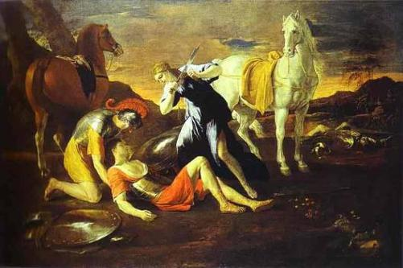

1
BİZİMKİLER
Anadolu Merkezli Dünya Tarihi
10. KİTAP
1100 – 1180
Haçlılar
Yazarlar
Evin Esmen Kısakürek
Arda Kısakürek
Bizimkiler adlı kitapların tümü aşağıdaki sitelerde mevcuttur:
http://sites.google.com/site/ekitapdunyatarihi/
2
3
4
Baudouin Kudüs Kralı
Anadolu yolgeçen hanına dönmüştü. İrili ufaklı pek çok Haçlı gurubu, Anadolu’yu geçerek,
Kudüs’e gidiyordu. Türkler bu geçen Haçlı guruplarına saldırıyor, onları yıpratıyorlardı. Bu
mücadelenin en önemlisi 1099 yılında Danimarka Kralının oğlu Sven’in Haçlıları ile yapıldı.
15.000 kişilik ordu Kılıç Arslan’ın kuvvetleri tarafından Alaşehir ile Terma arasında tamamen
yok edildi.
Anadolu Selçukluları Haçlılar karşısında yıpranırken, Danışmendoğulları diri kalmıştı.
Danışmendoğlu Malatya’yı almak için kuşattı. Malatya hâkimi Gabriel, Bohemond’dan yardım istedi Yardıma gelen Bohemond’u, 1100 yılında Danışmend Gazi tutsak aldı.
Danışmendoğlu, Haçlıları Malatya önlerinde yenilgiye uğratmıştı. Anadolu Türk egemenleri
yerli Hıristiyan halka Haçlılardan çok daha iyi davranıyorlardı. Bu nedenle Ermeni ve Süryani
tarihçiler Danışmend Gazi ve Kılıç Arslan’a övgüler yağdırırlar. Malatya, Danışmend Gaziye
bu nedenle kapılarını açmıştır. Danışmend Malatya’dan ganimet aldı, ama kimsenin
öldürülmesine izin vermedi. Kıtlık çeken ve tarım araçlarından mahrum halka buğday, öküz
vs getirip dağıttı. Danışmend Gazi ölünce, Urfalı Mateos “ o iyi bir adam, memleketi imar
edici ve Hıristiyanlara karşı çok merhametli bir kişiydi. Hıristiyanlar ölümü için büyük matem
tuttu. “ diye yazıyordu. Buna karşılık Haçlılar yerli Hıristiyan halka çok kötü davranıyorlardı.
Onlara en az Müslümanlar ve Yahudiler kadar kötü davranılıyordu. Yağmaya uğruyor, toptan
kılıçtan geçiriliyorlardı. Haçlılar için herkes Doğuluydu.
Muhammed Tapar ile Berkyaruk arasındaki mücadele de sürüp gidiyordu. Muhammed
Tapar’ın baskısı sonucu Bağdat’ta hutbe Tapar adına okunuyordu. 1100 yılı başında
Berkyaruk Bağdat’a gitti ve hutbe Berkyaruk adına okunmaya başlandı. Berkyaruk kışı
Bağdat’ta geçirdikten sonra kardeşi Muhammed Tapar ile savaşmak üzere harekete geçti.
İki kuvvet Mayıs 1100 de Hamedan yakınlarında karşılaştılar. Muhammed Tapar’ın ordusu 20
bin askerdi ve Tapar la beraber Sermez, Ahur İnanç Yabgu, Ayaz, Müeyyidülmülk ve
Nizamiler vardı. Berkyaruk’un yanında ise vezir Ebul-Mehasin, Gevherayin, İzzüddevle bin
Sadaka, Sürhap bin Bedr ve Gürboğa bulunuyordu. Savaş başta Berkyaruk kuvvetlerinin
üstünlüğü ile geçerken, Gevherayin’in ölmesi üzerine durum değişti. Berkyaruk’un ordusu
tamamen dağıldı. Yanında sadece 50 atlı kalmıştı. Berkyaruk’un veziri Ebul-Mehasin de
Tapar’a esir düştü.
Bu yenilgi, öteki kardeş Sencer’in durumunu güçlendirdi. O sıralar Sencer çok güçsüzdü.
Sadece valilik adı, oya katılma hakkı ve sancak akdetme yetkisi vardı. Horasan’ın büyük
5
bölümü Berkyaruk’un komutanlarından Habeşi’nin elindeydi. Berkyaruk, Habeşi’nin yardımı
ile Horasandan asker toplayıp, tekrar Tapar üzerine yürümek istiyordu. Bunu sağlamak için
sertliğe başvurdular, örneğin Nişabur eşrafını tutuklayıp, öldürdüler. Sencer, bu uygulamaya karşı çıkarak, Horasan’ın egemenliği için çekiştiği Habeşi ile silahlı mücadeleye girişti.
Habeşi Sencer’le savaşmak için 20 bin kişilik bir orduya sahipti. Yardıma Berkyaruk’u da
çağırdı. Berkyaruk bin atlı ile yardıma geldi. Yapılan savaşı Sencer kazandı. Ama Berkyaruk
da Sencer’in annesini tutsak almıştı. İki kardeş tutsakları karşılıklı salıverdiler.
Savaştan sonra Habeşi saklandığı köyde bulunarak, öldürüldü. Berkyaruk da 17 atlı ile çöl
yolunu izleyerek Cürcan üzerinden Damgan’a gitti. Habeşi’nin ortadan kalkmasından sonra Şehzade Sencer Horasan’da fiilen bağımsız bir egemen haline geldi.
Sultan Berkyaruk Huzistan’da iken Porsuk’un iki oğlu Zengi ve İlbeyi gelip, Sultana katıldılar. Müeyyidülmülk’ün Ahur’u zehirleyerek öldürdüğünü iddia eden Ahur’un evlatlığı
Ayaz da Berkyaruk’a katıldı. Sultan Berkyaruk tekrar eski kuvvetini kazanmıştı. Bundan
telaşa kapılan Muhammed Tapar ordusu ile Hamedan üzerine yürüdü.
Bu sırada ortam çok müsait olduğundan, İsfahan’da İsmaili propagandası hızla gelişiyordu.
Her mahallede bir İsmaili görevlisi vardı. Taraftar sayısının 30 bini bulduğu söylenir. Kentte
pek çok cinayet işleniyordu. Ölenlerin çoğunun Berkyaruk’a karşı çıkanlar olması ve Tapar’ın
askerlerinin Berkyaruk ‘a Batıni diye bağırması neticesinde Berkyaruk Haşhaşilere karşı
harekete geçti. Askerler ve halk büyük bir katliam gerçekleştirdiler. Bu arada bir sürü insan da
asılsız ihbarlara kurban gitti. Yakalananların bir kısmı Sünniler tarafından yakılarak
öldürülüyordu. Bu sırada Emir Çavlı da 1100 ile 1101 yılları arasında bölgedeki pek çok
İsmaili’yi öldürdü.
İşler, Haçlılar için kötü gitmeye başlamıştı. Kudüs Kral Naibi Godefroi de Bouillon, 1100 yılı yazında öldü. Bu sırada Piza’lı patrik Daimberg’e söz verilen kule ve mahalle verilmemişti.
Bu sırada Antakya kontu Bohemond Danışmendlere esir olduğundan, Urfa kontu Baudouin
Kudüs Kralı seçildi. Kral seçilen Baudouin hem Godefroi’nın kardeşi idi ve hem de ilk Kudüs
Kralı unvanını alan kişi oldu. Urfa kontu Baudouin’i Kudüs tahtına ve Tancred’i Antakya
kont naipliğine çıkarma işlerini Cenova (Ceneviz) donanması üslendi. Cenevizlilerin kral ile
yaptıkları anlaşmaya göre, ele geçirilen yerlerde, köle ve paranın üçte biri Cenevizlilere aitti.
Cenevizliler yeni kral adına Kayseriye ve Arsuk limanlarını ele geçirdiler. Cenevizliler, halkın karnında altın var mı diye, insanların karınlarını bıçaklarla deştiler. Bütün yaşlılar öldürüldü.
Fidye alınma olasılığı olanlar zincire vuruldu. O ana kadar çok fakir olan haçlılar birden
zengin oldular.
Urfa kontu Baudouin yeni Kudüs kralı seçilince patrik Daimberg dağdaki bir kiliseye sığındı.
Galile prensi Tancred de yeni krala feodal yeminle bağlanmayı kabul etmedi. Fieflerini terk
ederek Antakya’ya gitti. Patrik Daimberg’e de orada yeni mülkler ve bir kilise verdi. Patrik de
yeni Kudüs Kralını Papaya şikâyet etmek için Roma’ya gitti. Papa onu yeniden Kudüs patriği
atadı. Ama Daimberg yolda öldü.
Bu sıralarda Kudüs Kralı, Mısır Fatımî ordusu karşısında yenilip, Remle limanını Fatımîlere
kaptırdı. Bu sırada imdadına Haçlı filosu yetişti. Filodaki askerler karaya çıkarak Krala
yardım ettiler. Böylece Haçlılar açısından daha büyük bir felaket önlenmiş oldu. Bundan kısa
bir süre sonra da Cenova filosunun yardımı ile önemli liman Akka Haçlıların eline geçti.
6
Cenevizliler Akka, Kayseriye ve Arsuk limanlarının üçte biri ile buna muadil tarım alanını
aldılar. Akka limanının gümrük gelirinin üçte biri Venedik’e bırakıldı. Cenevizliler elde
ettikleri tüm ayrıcalıkları altın harflerle bir levhaya yazarak, Kudüs kilisesine astılar.
Urfa kontu Baudouin Kudüs kralı olunca onun yerine de Baudouin de Burg geçmişti.
Baudouin de Burg, Malatya hâkimi Gabriel’in kızı ile evlendi. Kızın 50 bin altın çeyizi vardı.
Kont evliydi. Kilise evli olanların ikinci bir evlilik yapması halinde, kral bile olsalar aforoz
ediyordu. Baudouin de Burg para için aforozu bile göze aldı.
1100 yılında, İngiltere Fatihi William I the Conqueror’ün dördüncü oğlu Henry I ağbeyi
William II’yi takiben İngiltere Kralı oldu. I. Henry çok iyi bir eğitim almıştı. Henry İngiltere’yi dengeleyecek ve Anglo-Saxon’lar ile Anglo-Norman’lar arasındaki çelişkileri azaltacak reformları yapmak için çok çalıştı.
7
Selçuklu Sultanları ve Ufak Orduları
Berkyaruk ve Tapar’ın orduları 1101 yılında Hamedan’da karşılaştıklarında, Berkyaruk’un
ordusu 50 bin kişi, Tapar’ın ordusu 15 bin kişiydi. Akşama kadar devam eden savaş sonunda
Tapar yenilerek, çekildi. Berkyaruk pek çok esir almıştı. Bu esirler arasında Müeyyidülmülk
de vardı. Müeyyidülmülk Sultana 100 bin altın vereceğini ve veziri olacağını söyleyerek,
serbest kalmak istiyordu. Berkyaruk bir süre tereddütte kalıp, ne yapacağını bilemedi. Sonra
ortaya çıkan dedikoduları duyunca, Müeyyidülmülk’ün kellesini kendi kılıcı ile bir vuruşta
uçurdu.
Müeyyedülmülk, Muhammed Tapar’ı Sultanlığa taşımıştı. Müeyyedülmülk ölünce, Sultan
Tapar, Nizamülmülk’ün bir diğer oğlu Ziyaülmülk’ü kendine vezir yaptı. Müeyyedülmülk’ün
oğullarını da kendi oğullarına vezir atadı. Nizamülmülk’ün bir diğer oğlu Şemsülmülk’ü ordu
divanının başına getirdi.
Muhammed Tapar’ın yanında 2 emir ile 300 asker kalmıştı. Tapar kardeşi Sencer’den yardım
istedi. İki kardeş Cürcan’da buluşarak anlaştılar. Bundan sonra Tapar’a Nizamiler de
katılınca, Tapar tekrar kuvvetlenmeye başladı.
Sultan Berkyaruk ise zaferinin peşinden etrafında 100 bin asker toplamıştı. Ama bunların
paralarını ödeyemediği için büyük bir kısmını terhis etti. Ordudan ayrılanlardan biri de
Dübeys’di. Dübeys, Hille ve merkezi Irak’ta hüküm süren babası Sadaka’nın yanına döndü.
Bu sırada Selçuklu ailesinden Mevdud bin İsmail bin Yakuti, Azerbaycan’da isyan etti.
Berkyaruk ona karşı Gürboğa’yı 10 bin atlı ile yolladı. Ayaz’da Hamedan’a gitmek için izin aldı. Berkyaruk’un yanında az sayıda asker kalmıştı. Tapar ve Sencer bunu fırsat bilerek,
Berkyaruk’un üzerine yürüdüler. Berkyaruk Irak’a doğru çekilmeye başladı. Ayaz Tapar ile
anlaşmaya çalışmıştı ama anlaşamayınca yine Berkyaruk’un yanına döndü. Berkyaruk ve
Ayaz 5 bin askerle Eylül 1101 de Bağdat’a gittiler.
Berkyaruk ‘un hazinesi bomboştu. Halifeden para istedi. Halife, müzakereler sonunda 50 bin
altın verdi. Bu sırada askerler halkı yağmaladılar. Berkyaruk’un veziri Ebul-Mehasin, Hille
emir’i Sadaka’dan Sultan hazinesine ait olduğunu iddia ettiği 1 milyonun üzerindeki altını
istedi. Vermez ise asker yollamakla tehdit etti. Bunun üzerine Sadaka Muhammed Tapar
tarafına döndü.
Kirman Selçuklu Meliki İranşah İsmaili mezhebine geçmişti. Tabii Sünniler bunu kabul
etmeyip, durumu bir Sünni ezilmesi şeklinde Muhammed Tapar’a yansıttılar. Kirman Sünni
ileri gelenleri, İranşah’ın İslam dininden sapma nedeniyle öldürülmesine karar verdiler.
İranşah kaçmasına rağmen, sonunda 1101 tarihinde öldürüldü. İranşah, Melikliği sırasında
akrabalarını takip ettirip, yakaladığını öldürtmüştü. Ortada kala kala Kirmanşah’ın oğlu
Arslanşah kalmıştı. Kirman Selçuklu tahtına o çıkarıldı.
Bu sırada üçüncü halifelik de İspanya’daydı. 749'da Emevîlerin yıkılmasıyla Emevi Halifesi
Hişam'ın torunu, Şam'dan kaçan Prens Abdurrahman, 755' te Septe'ye geçmişti. 756'da 8
Endülüs Emevi devletini kurmuş kendisi de emir olmuştu. 929'da III. Abdurrahman ise
halifeliğini ilan etmişti. Abbasi, Fatımi ve Emevi olmak üzere üç halife vardı.
Endülüs Emevi devleti 1000 yılları
Endülüs Emevi devleti 1031
1031'e gelindiğinde Emevi halifesinin otoritesi sarsılmış, ülke emirliklere bölünmüştü.
Endülüğs’de iç savaş başladı. 1031'de Şii olan Hammûdiler hilâfeti devam ettirmek istediler.
1086'da Abbadi hanedanından İşbiliye Meliki, Kuzey Afrika Murâbıtlar İmparatorluğundan yardım istemişti. Oradan gelen kuvvetlere 13 Endülüs meliki de katıldı. Endülüsün ömrü
uzamıştı.
9
Anadolu Yolları
1101 Haçlı seferi Anadolu güzergahı
Papa Paskalis’in çabaları ve Kudüs Latin Krallığının çağrısı ile yeni Haçlı orduları Orta Doğuya doğru akıyorlardı. I. Haçlı seferine katılanlardan sayıca daha kalabalık olan bu
ordular 1101 yılında üç ayrı ordu halinde Anadolu’ya girdiler. Birinci ordu Milano
Başpiskoposu Anselm de Buis’in yönetiminde Lombardlar, Blois kontu Etienne
kumandasındaki Fransızlar ve Alman mareşali Konrad’ın yönetimindeki Almanlardan
oluşuyordu. İkinci ordu, Nevers kontu II. Guillaume kumandasında Fransız ordusuydu.
Üçüncü ordu ise, Aquitania dükü IX. Guillaume kumandasında Fransızlar ve Bavyera
(Bayern) dükü I. Welf yönetimindeki Almanlardan oluşmuştu.
1’ci Haçlı ordusu 1101 İlkbaharında Constantinopolis’e vardı. Hemen Anadolu’ya geçirilerek
Kibotos ve İzmit yöresindeki karargâhlara yerleştirildi. Bu ordunun niyeti Kudüs’e gitmek
değildi. Anadolu veya Suriye’de yeni yerler ele geçirerek Urfa, Antakya gibi Haçlı dukalıkları
kurmak istiyorlardı. Ayrıca, Danışmendoğullarının eline geçen Bohemond’un da kurtarılması
gerekiyordu. Bohemond Normanların reisi ve 1’ci Haçlı seferinin ünlü komutanıydı. Onun Niksar’da esir tutulmasına göz yumulamazdı.
Bohemond’u kendi reisleri kabul eden Lombardlar, Niksar’a varmak için, önceki Haçlıların
geçtiği yollar yerine Kuzeyden, İç Anadolu’dan geçen bir yolu tercih ettiler. Alexios,
Lombardlara bu yolu geçmenin mümkün olmadığını anlatmaya çalıştı, Türklerin arasından
geçmek mümkün değildi. Ama Lombardlar dinlemediler. I. ordudaki Fransız ve Almanlar da
Lombardlarla beraber gitmeyi kabul ettiler. Haçlı ordusu hem kendine çok güveniyordu ve
hem de yeni yerler alıp, zenginleşmek iştahlarını kabartıyordu.
Doğu Roma İmparatoru Alexios, 1ci Haçlı ordusunu güzergâh konusunda ikna edemeyince
yanlarına I. Haçlı seferleri komutanlarından Toulouse kontu Reymond’u danışman, kendi komutanlarından Tzitas’ı 500 kişilik Peçenek birliği ile birlikte kılavuz olarak verdi.
10
1ci Haçlı ordusu İznik, Osmaneli, Gölpazarı, Nallıhan, Ayaş yolunu takiben Ankara’ya doğru
yola çıktı. Bu yol “ Hacılaryolu “ diye tanınan yoldu. Yol zordu ve dağlardan geçiyordu. Ama
Eskişehir Selçukluların elinde olduğundan Doğu Roma generali Tzitas, Doğu Roma sınırları
içinde kalan bu yolu tercih etmişti. Haçlı ordusunun Ankara üzerinden Niksar’a gideceği
belliydi. Bu güzergâh sadece Anadolu Selçuklu değil aynı zamanda Danışmendoğulları
topraklarını da tehlike altına sokuyordu.
Kılıç Arslan elindeki kuvvetlerle bu büyük Haçlı ordusuyla başa çıkamayacağını,
deneyimlerine dayanarak biliyordu. Sultan, Danışmendoğlu Gümüştekin ile anlaştı. Diğer Türk Beylerine de mektuplar yazılarak tehlike anlatılıp, yardım istendi. Diğer beylerden
yardım gelmiş olması çok kuvvetli bir olasılıktır. En azından Halep Meliki Rıdvan, Haran emir’i Karaca, Artuklu Belek gibi Beyler yardım yollamışlardır.
Ankara kalesi ve kenti Haçlılar gelmeden önce boşaltıldılar. Haçlılar Ankara kalesine girdiler
ama kale ve kenti anlaşmaları gereği Doğu Roma İmparatorluğuna teslim ettiler. Haçlılar
burada 2 gün dinlendikten sonra, Çankırı’ya doğru yola çıktılar. Bu yol yine Doğu Roma
yerleşimleri içinde kalıyordu. Tzitas, Türklerin yoğun olarak yerleştiği bölgelerden geçen
yolları kullanmak istemiyordu (25 Haziran 1101).
Haçlılar için zorluklar başlamıştı. Bölgeye gelmiş olan Kılıç Arslan Haçlı ordusu önünde geri
geri gidiyordu. Bu sırada yiyecek ve içecek kaynakları tahrip ediliyordu. Ordular 2
Temmuz’da Çankırı’ya vardılar. Kılıç Arslan, Danışmendoğlu ve diğer yardıma gelenlerle birleşmişti. Bütün birleşmelere rağmen 200.000 kişiden daha kalabalık olan Haçlı ordusuna
karşı Türk ordusu ancak 20.000 civarındaydı.
Bu kadar nispetsiz bir savaş tabii yapılamazdı. Kılıç Arslan Türklerin çok iyi bildiği yıpratma
savaşları veriyordu. Haçlı ordusunun orasına burasına, gece gündüz demeden saldırılıyordu.
Okla, fırsat düşerse kılıçla Haçlılar durmadan öldürülüyorlardı. Türk saldırılarına mani
olamayınca Haçlılar dağınık değil bir bütün kitle halinde yürümeyi denemek istediler. Ama bu
sefer de açlık başladı. Hiçbir yerde yiyecek yoktu, yiyecek aramaya gidenler bir daha geri
gelmiyordu. Haçlı ordusu açlıktan bezmiş kendi içinde birbiri ile çelişkiye düşüp, kavga
ederek ilerliyordu. Haçlılar Türklerin nefesini enselerinde hissediyorlardı ve bundan çok
tedirgindiler.
Bu sırada Kudüs’ten çıkmış olan Artukoğulları, kendilerine dirlik olarak verildiğini iddia
ettikleri Amid (Diyarbakır) havalisine geldiler.
Çukurova Ermenilerinin büyük bir kısmını etrafında toplamış olan I. Konstantin 1100
tarihinde öldü. Yerine I. Toros çıktı (Bu Toros, daha önce görülen Urfa egemeni Toros değildir). Toros (1100 – 1129) hâkimiyetinin ilk yıllarında Doğu Roma ve Haçlılar
Çukurova’yı ele geçirmek için mücadele ederken, Ermeniler de dağlardan düz alana inmeye
çalışmışlardır.
11
Merzifon Savaşı
Haçlı 1ci ordusu, 2 Ağustos 1101 de Merzifon yakınlarında bir ovaya geldi. Haçlılar ovayı
geçerken, öğleden sonra, Türkler ovanın etrafındaki dağlardan, doludizgin, dört bir yandan
savaş naraları atarak saldırdılar.
Kılıç Arslan 1 aydır tatbik ettiği planı sonlandırmak için bu ovayı seçmişti. Haçlılar ovaya
yaklaşırken onların iyice güçten düşmüş olacaklarını hesaplayıp, ovayı kuşatan tepelere
askerlerini yerleştirmiş, uygun anı kollamıştı. İşte şimdi, Türk saldırısını hiç beklemeyen
Haçlıların üzerine her yerden oklar yağıyordu.
Haçlılar hemen müdafaa durumuna geçip, arabaları dizerek, ağırlıklarını yığarak bir siper elde
ettiler. Siperlerin arkasına da saf saf dizildiler. Kızılderili filimleri gibi, Türk atlıları siperlerin 12
çevresinde at koşturup, dönüyor, Haçlıları ok yağmuruna tutuyorlardı. Saldırı akşama kadar
devam etti. Gece Türkler çekildiler.
Ertesi gün Konrad 3.000 Alman Haçlısı ile yiyecek aramaya Merzifon’a doğru ilerledi. Haçlı
kampından 4 – 5 Km ileride, içi yiyecek dolu bir kale, Türkler tarafından boşaltılmış,
Haçlılara tuzak kurulmuştu. Açlıktan gözü dönmüş Haçlılar buldukları yer şeyi yüklenip, geri
dönerken, Türkler saldırdı. Almanlar, ellerine geçenleri, hayvanlarını ve 700 askerlerini
kaybedip, perişan bir halde kampa döndüler. Bu sırada kamp da bir gün önceki gibi Türklerin
saldırısı altındaydı.
4 Ağustos günü Türkler saldırmadı. Haçlı kampı tamamen sarılmıştı. Kimse yiyecek aramaya
dışarı çıkamıyordu. Yakındaki suya atlarını, yük hayvanlarını götüremiyorlardı. Umutları
bitmiş, yok olmanın sınırında olduklarını fark etmişlerdi. Çareleri kalmamıştı, açlık ve
susuzluktan ölmemek için Türklere saldıracaklardı.
5 Ağustos sabahı gün doğarken Milano Başpiskoposu Anselm ordusunu takdis etti. Haçlı
yöneticileri yanında getirdiği kutsal mızrağı teşhir ederek, askerlerin moralini kuvvetlendirdi.
Bütün Haçlı askerleri günahlarından temizlendiler. Haçlı ordusu 5 guruba ayrıldı. Türklere ilk
olarak Haçlı ordusu içinde en kalabalık gurup olan Lombardlar saldırdılar. Bir süre sonra iyice yıpranan Lombardlar geri çekilerek yerini Almanlar aldı. Onlar yorulunca diğer gurup
yerini aldı. En son Doğu Roma’nın verdiği Peçeneklerce desteklenen Fransızlar saldırdılar.
Fransızların nerede ise tümü Türkler tarafından sağ bırakılmadı. Peçenekler geri çekildiler.
Reymond çok zor kaçtı. Akşam olduğunda, Haçlılar çok zayiat vermiş, çok yorulmuş ve
umutlarını iyice kaybetmişlerdi. Türklere karşı yaptıkları hücum hiçbir işlerine yaramamıştı.
Sonra gece çöktü.
Gece karanlığında şövalyeler kaçtılar. Sadakat, kahramanlık, fedakârlık hasletlerini unutarak
kaçtılar. Kadınları, çocukları, yaşlıları ve yaya askerleri ordugâhlarında bırakarak kaçtılar. Bu
kaçan binlerce şövalye, şövalye yemini etmiş yiğitler miydi?
Türkler de yorgundu. Bütün gün dalga dalga gelen Haçlılarla boğuşmuşlar, 3.000 ölü
vermişlerdi. Yorgundular, kendi karargâhlarına çekildiler. Gün onların günüydü, ama savaş
daha bitmemişti. Haçlı karargâhı orada duruyordu ve hala güçlüydü. Derken Türkler Haçlı
karargâhından kaçanların haberini aldılar. Demek düşman yılmıştı. Hemen sabah yapacakları
saldırıya hazırlanmaya başladılar.
Sabahın ilk ışıkları ile birlikte, Türkler dörtnala Haçlı karargâhının içine girdiler. Karargâhtan
kaçamayanlar ya öldürüldü, ya esir alındı. Yağma ile vakit kaybedilmeden kaçanların peşine
düşüldü. Kısa süre sonra yaya askerlere erişildi ve hepsi kılıçtan geçirildi. Türk atlıları
Haçlıları 2 gün boyunca takip ettiler. Bulduklarına aman vermediler. Sonunda Doğu Roma
topraklarında çok fazla içeri girdikleri düşünülerek, takibe son verildi. Şövalyeler ise hızla
Sinop’a kaçmışlardı. Sinop, Doğu Roma hâkimiyetindeydi ve sağlam surlarla korunuyordu.
Haçlı 1ci ordusunun kaybı müthişti. Askerlerinin beşte dördünü kaybetmişlerdi. Hayalleri
yıkılmıştı, zar zor Constantinopolis’e döndüler. Bir daha Anadolu’dan geçmeye cesaret
edemeyerek, Filistin’e deniz yolu ile gitmeye çalıştılar.
Kılıç Arslan ve Türk ordusu memnundu. Kendilerine olan güvenlerini tekrar kazanmışlardı.
Ama zaferin sefasını fazla süremeden, 2ci Haçlı ordusunun Konya’ya vardığı haberini aldılar.
13
2ci Haçlı Ordusu
Never Kontu Giyyom yönetimindeki Fransızlardan oluşan bu ordu, Haziran ortalarında
Constantinopolis’e varmıştı. 2ci ordu, 1ci orduya yetişmek üzere hemen yola çıkarak, onun
peşinden Ankara’ya geldi. Ankara’da birinci ordunun takip ettiği yön pek anlaşılamadı ve 2ci
ordu Konya’ya Kulu ve Cıhanbeyli üzerinden giden yola saptı.
Bu ordu daha Konya’ya varmadan, Kılıç Arslan ve Danışmendoğlu kuvvetlerinin bir kısmı
dağlar üzerinden hızla at sürerek, Merzifon savaşından 8 gün sonra 2ci Haçlı ordusunu
yakaladılar (13 Ağustos 1101). Türkler Haçlıları bulur bulmaz hücum etmeye başlamışlardı.
Ama bu Haçlılar hem yolda daha yıpranmamışlardı ve hem de daha moralleri yerindeydi.
Haçlı ordusu, saldırılara rağmen ileri yürüyüşüne devam ediyordu.
Kılıç Arslan bu Haçlı ordusu içinde ötekine benzer bir taktik uyguladı. Haçlıların önüne
geçerek, ağır ağır geri çekilmeye başladı. Böylece önlü arkalı Konya’ya gelindi. Haçlılar
Konya’ya saldırdılar ama herhangi bir sonuç alamadılar. Onlar hala 1ci ordunun başına
gelenleri bilmiyorlardı. Konya’da oyalanmak istemediler, ileri yürüyüşe devam ettiler.
Konya önlerinde Haçlılar 1 gün konaklamışlardı. Sonra güneye doğru 3 gün ilerlediler. Bu 3
gün boyunca içecek hiçbir şey bulamamışlardı. Susuzluk ve yorgunluktan iyice güçten
düşünce de etrafları Türkler tarafından çevrildi.
Savaş 1 gün sürdü. Haçlıların tümü kılıçtan geçirilmişti. Sadece Giyyom ve birkaç şövalye
kaçarak, Doğu Roma elinde bulunan Ermenek (Germanikopolis) kalesine sığınabildiler. 2ci ordudan sadece bir avuç insan Antakya’ya ulaşabildi.
14
Ereğli Savaşı
Kılıç Arslan daha 2ci Haçlı ordusu ile uğraşırken, 3cü Haçlı ordusu gelip, Anadolu Selçuklu
topraklarına girmişti. Fransız ve Almanlardan oluşan bu ordu, Doğu Roma İmparatoru
Alexios’un sözünü dinleyerek, 1097 Haçlı seferlerinde takip edilmiş olan yolu takip etti. Bu
yolun Doğu Roma sınırları içinde kalan kısmını sorunsuz geçmişlerdi. Nihayet Akşehir
yakınlarında Türk topraklarına girdiler.
Ordunun gelişinden ve güzergâhından haberli olan Kılıç Arslan gerekli tedbirleri almıştı. Yol
boyunca tüm su kuyu ve kaynakları yok edildi. Yiyecekler ve tarlalardaki ürün yakıldı.
Yerleşim yerleri boşaltılarak kimse bırakılmadı. Haçlılar sanki çölde yolculuk ediyorlardı. O
güzelim Anadolu bir çöl olmuş, Haçlıları içine almıştı. Bu duruma Haçlılar çok sinirlendiler.
Acılarını kentleri kasabaları yakarak çıkardılar.
Kılıç Arslan 2. Haçlı ordusu ile göğüs göğse savaşırken, 3.Haçlı ordusu da susuz ve
yiyeceksiz yıpranıyordu.
2ci Haçlı ordusunun işini bitiren Kılıç Arslan, Ereğli’ye çekildi, ordusunu dinlendirdi ve
Merzifon savaşından yeni gelebilenleri de alarak ordusunu tekrar birinci savaş seviyesine
çıkarmaya çalıştı. Tabii kısa sürede 2 ordu ile savaşmış olan Türkler de çok yorgundular,
dinlenmeleri gerekiyordu.
3cü Haçlı ordusu, Konya üzerinden doğuya doğru yürüyerek, 5 Eylül’de Ereğli’nin batısına
geldi. Burası içinden Ereğli ırmağının aktığı kısmen bataklık olan Avlos veya Olos ovasıydı.
Uzun zamandır susuzluk çekmiş olan Haçlılar bol ve temiz suyu görünce doğru suya koştular.
Hâlbuki nehrin karşı yakasında Türkler mevzilenmişti. Türkler su içmeye gidenlerin üzerine
15
şiddetli bir ok ateşi yolluyorlardı. Haçlılar daha ne olduklarını anlamadan, Türkler hücum
ettiler.
Kısa sürede Haçlılar sarıldılar. Kaçanlar oklanıyor, kalanlar ok veya kılıçla öldürülüyordu. Bu
kadar kalabalık bir ordu savaşmak yerine darmadağın olmuştu. 3. Haçlı ordusu Kılıç
Arslan’ın ve diğer Beylerin kuvvetleri tarafından imha ediliyordu. Ordunun başındaki
Akitanya Dükü Giyyom, 400 atlı ile kaçıp gitti. Sayısı 100 binleri aşan Haçlı ordusu Ereğli
yakınlarında yok edilmişti.
Her üç savaşta da kaçabilenler Haçlı şefleriydi. Bazı şövalyeler de kaçabilmişti. Ama geri
kalan çok büyük asker yığını yok olup gitmişti. Bu seferler Kudüs krallığını kuvvetlendirmek
için düzenlenmişti. Sonuçta ise birkaç Haçlı şefi ile çok az sayıda kılıç artığı Kudüs’e
varabildi. Bu da Kudüs krallığını kuvvetlendirmekten acizdi.
1101 yılında Haçlılara karşı Anadolu Türk beyliklerinin başarıları, Anadolu ve Türk tarihi
açısından bir dönüm noktası olmuştur. Birincisi 1097 de Haçlıların kazandıkları zaferlerden
sonra, eğer 1101 senesi Haçlıları da kazanmış olsalardı bu beklide Anadolu’daki Türk
varlığının sonu olurdu. Türklerin büyük bir çoğunluğu tekrar göçe başlayarak kendine yeni bir
yurt arardı. Kalanlar ise kısa sürede asimile olurlardı.
İkincisi, Türkler Anadolu’yu gelip ele geçirmişlerdi. Ama şimdi ele geçirdikleri toprakları
müdafaa ediyorlardı. Kazanılmış bir vatanı korumak ele geçirmekten zordur. Türkler Anadolu
topraklarını Haçlılara karşı müdafaa ederken, aynı zamanda bu topraklara bağlanıyorlardı.
Kılıç Arslan’ın kazandığı savaşlar sadece kazanılmış savaşlar değildi, onlar bir toprağın vatan
oluşunun başlangıcıydı.
Haçlılar Anadolu’yu geçerken Türkler karşısında öyle zayiat vermişlerdi ki, bu onların
Anadolu üzerinden Kudüs’e veya Suriye’ye gitme fikirlerini yok etti. Bundan sonra Haçlılar
Orta Doğuya gitmek için kendilerine başka yollar bulacaklardı.
Türklerin bu başarısı, bundan sonra Anadolu’nun değil yabancılar tarafından işgalini, bu
topraklardan geçmeyi bile düşünceden kaldıran yeni bir dönemin başlangıcı olmuştur. Bundan
sonra, Constantinopolis’ten Suriye’ye uzanan ve Anadolu’yu çapraz kesen yol, yabancılara
tamamen kapanmıştır.
Kılıç Arslan’ın Haçlılar karşısında peş peşe kazandığı başarılar, Doğu Roma İmparatorluğunu
onunla anlaşma yapmak zorunda bıraktı. Marmara kıyıları, İzmir ve Antalya Doğu Roma
İmparatorluğuna bırakıldı. Doğu Roma Anadolu’da bunlar dışında Selçuklulardan aldığı
yerleri geri verdi. Bu anlaşmadan sonra, Haçlıların baskı ve tahakkümünden bıkan Elbistan
Ermenileri de kılıç Arslan’dan yardım istediler. Bunun üzerine Kılıç Arslan Maraş çevresini
Haçlılardan temizledi.
Kılıç Arslan’ın bu başarıları Suriye ve Filistin’deki Müslüman varlığı için de çok önemli
olmuştur. Çünkü sayıları 400.000 bini aşan bu ordular Filistin’e varabilmiş olsaydı, herhalde
Suriye ve Filistin’deki Hıristiyan varlığı çok daha etken olacaktı. Bu belki de Orta Doğunun
kaderini değiştirecekti.
Haçlıların bu yenilgileri Batı Avrupa ile Doğu Roma’nın arasını iyice açtı. Batı yenilgilerden
sorumlu olarak Doğu Roma İmparatorluğunu görüyordu. İki Hıristiyan dünyanın arası iyice
açıldı. Karşılıklı güvensizlik ve nefret son safhaya çıktı. Bunun sonuçları ileride görülecektir.
16
Berkyaruk Tapar mücadelesi
Bu sırada Büyük Selçuklu devleti Sultanları kendi aralarında mücadeleye devam ediyorlardı.
Muhammed Tapar yanında 10 bin kişilik ordu ile Ekim1101 de Bağdat’a geldi. O gelirken
Bağdat’ta bulunan Berkyaruk hastaydı ve yatıyordu. Berkyaruk ve askerleri önce Dicle’nin
öte kıyısına çekildiler. Sonra da Bağdat’ı bırakıp Vasıt’a gittiler. Tapar ve Sencer 1 ay
Bağdat’ta kaldıktan sonra, oradan ayrılıp, Sencer Horasan’a, Tapar Hamedan’a döndüler.
Aradan çok geçmeden Berkyaruk’un Halifenin mallarına saldırdığı haberi geldi. Tapar,
Artıkoğlu İlgazi’yi Bağdat Şıhnesi tayin edip, kendi de Bağdat’a gitti. Bu sırada Berkyaruk iyileşmişti. Berkyaruk iyileştikten sonra ona katılmalar oluyordu. Tapar kardeşi çok
kuvvetlenmeden onun üzerine yürüdü. Ruzraver’de iki Sultanın kuvvetleri karşılaştığında, iki
tarafta da 4 bin asker kadar kuvvete sahipti. Birinci gün taraflar savaş düzeninde bekledi.
İkinci gün her iki taraftan düello için çıkan askerler, birbirlerine yaklaşınca sarılıp
kucaklaşıyorlar, birbirleri ile savaşmıyorlardı. Bu durumda savaş imkânsızdı, barış yapmaya
karar verildi. Emirler iki sultanı barışa zorladılar. İki sultan arasında varılan anlaşmaya göre:
Berkyaruk Sultan, Muhammed Tapar Melik unvanını taşıyacaklardı. Gence, Azerbaycan,
Diyarbakır, Elcezire ve Musul Tapar’a ait olacaktı. Melik Tapar herhangi bir bölgeye hâkim
olmakta zorlukla karşılaşırsa Sultan Berkyaruk ona askeri yardım yollayacaktı. Horasan
dışındaki yerler Berkyaruk’a ait olacaktı. Muhammed Tapar Sultan Berkyaruk’a yılda
1.300.000 altın vergi ödeyecekti. Melik Tapar sarayının kapısında günde üç nevbet (bando)
çaldıracaktı. Anlaşmadan sonra herkes kendi topraklarına döndü.
Hatırlanacağı gibi Musul Beyi Gürboğa, Selçuklu Sultanı Berkyaruk’un isteği ile
Azerbaycan’a gitmişti, orada öldü. Gürboğa’nın naibi Türkmen Musa da Musul’a hâkim oldu.
Ama Cezaretü İbn Ömer hakimi Çökürmüş, buna razı olmayarak Musa’nın üzerine yürüdü.
Musa, yardıma Artukoğlu Muinüddin Sökmen’i (Sokman) (Artukoğlu İlgazi’nin kardeşi) çağırdı. Sökmen (Sokman) yardıma gidip, Musul Çökürmüş tehlikesinden kurtulunca,
Türkmen Musa, Artukoğlu Sokman’a 10 bin altın ve Hısnı Keyfa kalesini verdi. Böylece
Artukoğlu Sokman Hısnı Keyfa (Hasankeyf) Artuklu Beyliğini kurmuş oldu (1102 – 1409).
Artuklular, Hasankeyf, Mardin ve Harput olarak üç kol halinde hüküm sürmüşlerdir.
Muhammed Tapar, Kazvin’de kendi ile Berkyaruk arasında barışı sağlayan emirleri kendine
ihanetle suçladı. Onlara bir şölen düzenleyerek, tuzak kurdu. Tapar şölene yanında önemli
emirlerden Besmel ve Aytekin’le beraber geldi. Besmel öldürüldü, Aytekin’in gözüne mil
çekildi.
17
Berkyaruk taraftarı olan Yınal bin Anuştekin, dağlarda Haşhaşilerle (Haşhaşiler)
dövüşüyordu. Yınal, nedense Tapar’ın yanına gelip, ona katıldı. Tapar, onunla birlikte Rey’e gitti. Orada sarayının kapısında beş nevbet çaldırmaya başlattı. Böylece hem anlaşmaya uymuyor ve hem de kendini sultan ilan etmiş oluyordu. Bunun üzerine Berkyaruk tekrar
Tapar’ın üzerine yürüdü. Rey yakınındaki savaşta her iki ordu da yaklaşık 10 bin askerden
meydana gelmişti. Mart 1102 de savaşı çok kısa bir sürede Berkyaruk kazandı. Ama savaşta
her iki taraftan da kimse ölmemişti. Berkyaruk’un ilk saldırısında Tapar ordusu dağılıp,
kaçmıştı. Tapar az sayıda askeri ile İsfahan’a çekilip, hemen kenti kuşatmaya hazırlamaya
başladı.
Berkyaruk, İsfahan’ı kuşatmaya geldiğinde ordusu 15 bin atlı, 100 bin yayadan oluşuyordu
(Mart 1102). Kuşatma sırasında, 6 ay içinde kentte açlık başlamıştı. Para da kalmamıştı.
Tapar’ın askerleri hem aç ve hem de parasızdılar. Kuşatmanın böyle devam edemeyeceğini
anlayan Tapar, 150 askeri ve Yınal ile birlikte kentten ayrılıp, asker toplamaya gitti.
Berkyaruk, Ayaz’ı çok sayıda askerle kardeşinin peşinden yolladı. Kısa sürede Muhammed
Tapar yakalandı.
Muhammed Tapar, emir Ayaz’a “ Senin bana bazı yükümlülüklerin ve henüz bozulmamış
anıların var. Üstelik ben sana kötülük olacak hiçbir şey yapmadım “ dedi. Bunun üzerine
Ayaz’da Tapar’ı bırakarak, oradan uzaklaşabilmesi için atlar verdi. Ama Tapar’ın sancağını,
çetrini ve biraz da parasını alıp, Berkyaruk’un yanına döndü.
Ayaz, Berkyaruk’un yanına vardığında, Tapar’ın sancağı ters dönmüş şekilde taşınıyordu.
Berkyaruk kardeşinin sancağına yapılan bu muameleyi beğenmeyip, serzenişte bulundu. Bu
davranışı duyan Tapar’da kardeşinin davranışından ötürü çok memnun oldu.
Tapar kentten ayrıldıktan sonra, İsfahan’ın etrafına yağmacılar toplanmıştı. Kent de kendini
yağmacılara karşı canla başla savunuyordu. Yağmacılar, kentin teslim olmayacağını anlayınca
bırakıp gittiler. Berkyaruk da emirlerinin isteğine uyarak Ekim 1102 de kuşatmayı kaldırıp,
oradan ayrıldı.
Berkyaruk İsfahan’dan ayrılıp, Hamedan’a geldikten sonra Gümüştekin’i Bağdat’a şıhne
(askeri vali) atadı. Bu sırada Bağdat’ta şıhne olarak Tapar tarafından atanmış olan Artukoğlu
İlgazi şıhne olarak bulunuyordu. İlgazi’nin tarafını tutan kardeşi Sökmen ve Hille hâkimi
Sadaka vardı. Gümüştekin Bağdat’a gelirken, İlgazi de kentten uzaklaştı. Gümüştekin Aralık
1102 de Bağdat’a geldi.
Seyfüddevle Sadaka, İlgazi ve Sökmen, Halife kontrolündeki köyleri basıp yağmalıyorlardı.
Bu eylemlerinin durdurulması istenince de Gümüştekin’in kendilerine teslimini şart
koşuyorlardı. Bunun üzerine Gümüştekin 1 aydan daha fazla Bağdat’ta kalamayarak, oradan
ayrıldı. Bundan sonra Bağdat’ta, Vasıt’ta ve diğer çevre kentlerde hutbe tekrar Muhammed
Tapar adına okunmaya başlandı. Berkyaruk’un Bağdat ve çevresini kontrolü altına alma
eylemi boşa çıkmıştı.
18
Bohemond
Bohemond I, Antakya kontu
Haçlılarla mücadele sırasında çok verimli bir işbirliği yapmış olan Selçuklu Kılıç Arslan ile
Danışmendoğlu Gazi’nin ve oğlu Gümüştekin’in yolları savaşlardan hemen sonra ayrılmıştı.
Ortak tehlike ortadan kalkınca, herkes kendi menfaati doğrultusunda hareket ediyordu. Kılıç
Arslan da, Gümüştekin de Malatya’yı istiyorlardı. Malatya’yı ilk alan 1102 tarihinde
Danışmendoğulları oldu. Şimdi bu bölgede kuvvetlenmekte olan Danışmendoğulları Anadolu
Selçuklularını tedirgin ediyordu. Bu sıralar, eski bir Türk köle komutan, Sasanilerin Ermeni
krallarına verdiği Şah-ı Erman unvanını alarak, Van gölü ve çevresinde bir hanedanlık kurdu.
Antakya hâkimi Bohemond Danışmendoğlu Beyinin elinde Niksar’da hapisteydi. Yerine yeğeni Tancred bakıyordu. Antakya Haçlı devleti sürekli etrafına saldırarak, çevresini çok
rahatsız ediyordu. Bu saldırılardan hem Doğu Roma İmparatorluğu Çukurova nedeniyle ve
19
hem de Halep melikliği zarar görüyordu. Hatırlanacağı gibi Halep Meliki Rıdvan, Haçlılarla yapılan savaşlarda Anadolu Selçuklularının yanında savaşmıştı. Halep Antakya’nın tehdidi
altındaydı. Kılıç Arslan, herhalde Halep Meliki Rıdvan’ın da etkisi ile babası Süleymanşah’ın
ele geçirdiği ama Haçlıların 1098 de aldıkları Antakya’yı, tekrar geri almak istiyordu.
Kılıç Arslan Maraş yakınlarına geldi. Kılıç Arslan’a Halep’den de lojistik ve askeri yardım
gelecekti. Anadolu Selçuklu ordusu Antakya’ya doğru yürüyecekken, Danışmendoğlu tutsak
almış olduğu Bohemond ve Richard’ı kurtuluş akçesi karşılığı serbest bıraktı. Bu serbest
bırakma Kılıç Arslan’ın gıyabında gerçekleşmişti ve Kılıç Arslan bu konuda Danışmendoğlu
ile mutabık değildi. Danışmend Gazi, aldığı fidyeden bir miktarını da Kılıç Arslan’a vermiyordu. Ağustos 1103 tarihinde Maraş civarında Rum Selçuklu ve Danışmend kuvvetleri
karşılaştılar. Kılıç Arslan galip geldi, Danışmend Gazi kuvvetleri perişan olmuştu. Danışmend
Gazi, bu savaştan sonra, ölene kadar 2 yıl bir daha kendini toparlayamadı. Ortaya çıkan bu
anlaşmazlık sonucu Kılıç Arslan, Antakya seferinden vazgeçerek, geri döndü. Bu tarihlerden
sonra Dılmaçoğullarının Kılıç Arslan’a bağlı hale geldiği sanılmaktadır.
Bohemund’un serbest bırakılması ile ilgili görüşmeler, Haçlılarla epeydir devam ediyordu.
Danışmend Gümüştekin’in Bohemund’u serbest bırakması Müslüman dünyasında iyi
karşılanmadı. Bohemund’un serbest kalması ile Haçlıların morallerinin kuvvetlendiği ve
etrafa yaptıkları saldırıları arttırdıkları görüşü yaygındı. Dönemin Müslüman tarihçileri “
Müslümanların başına gelen bu felaketler (Halep ve çevresine yapılan Haçlı akınları sonunda
ölen Müslümanlar kastediliyor), onun yaptığı bütün iyilikleri silip götürdü “ demektedirler.
Mevdud bin İsmail bin Yakuti’nin babası İsmail’i, hatırlanacağı gibi, Berkyaruk öldürtmüştü.
Mevdud babasının intikamını almak istiyordu. Azerbaycan’a hâkim durumda olan Mevdud
bin İsmail bin Yakuti, eniştesi Muhammed Tapar’ı Azerbaycan’a davet etti. O da yanına gitti.
Ancak Mevdud Ocak 1103 de 22 yaşındayken aniden öldü. Bunun üzerine, Mevdud’un
yanında bulunan Sökmen el-Kutbi, Muhammed bin Yağısıyan ve Kızıl Arslan gibi emirler
askerleri ile birlikte Tapar’a katıldılar.
Tapar’ın tekrar hızla kuvvetlendiğini anlayan Berkyaruk, onun üzerine yürüdü. İki ordu
Azerbaycan’da Hoy kenti önünde Şubat 1103 de karşılaştılar. Gece yapılan savaşı
Berkyaruk’un ordusu kazandı. Savaşı kaybeden Muhammed Tapar önce Erciş’e sonra
Sökmen el-Kutbi’ye bağlı olan Ahlat’a gitti.
Büyük Selçuklu Sultanları Muhammed Tapar ile Berkyaruk arasındaki mücadele devam
ederken, 1103 tarihinde Sultan Sencer Haşhaşilere karşı harekâta başladı. Sencer’in
kuvvetlerine Bozkuş adlı bir komutan kumanda ediyordu. Harekât Kuhistan’da yapılmıştı.
Harekât sonunda tesis edilen anlaşmaya göre, Haşhaşiler yeni bir kale inşa etmeyeceklerdi;
silah satın almayacaklardı ve kimseyi düşüncelerini kabule zorlamayacaklardı. Bu anlaşma
Haşhaşiler tarafından statükonun devamı demekti. Sencer ise devleti herhangi bir taahhüt
altına sokmadan Haşhaşileri durdurmuş oluyordu.
Bu sırada “ Sagun “ unvanlı bir Karahanlı prensi, büyük bir ordu ile Karahanlı hükümdarı II.
Muhammed Han üzerine yürüdü. Muhammed Han Sencer’den yardım istedi. Sencer yardım
için Semerkant üzerine yürüyüşe geçince, Sagun af dileyerek Muhammed Han’la anlaştı.
Büyük Selçuklu devletinde iki sultan arasında uzun zamandır devam etmiş olan mücadele,
herkesi zayıf düşürmüştü. Sadece Tapar ve Berkyaruk değil, bütün emirler de iyice
zayıflamışlardı. Herkesin hazinesi nerede ise suyunu çekmişti. Para azalırken, askerler de
20
durmadan maaşlarını arttırmaya çalışıyorlardı. Savaşlar büyük giderlere mal oluyor ama gelir
getirmiyordu. Halk canından bezmişti. Ne yapacağını şaşırmıştı. Otorite yokluğu halkın daha
fazla ezilmesine sebep oluyordu. Buna karşılık devlet vergi alamıyor, zaten fazlalaşan
giderleri, gelirleri fersah fersah aşıyordu. Bu durumda ordular küçülmüş, birkaç bin kişilik
ufak birlikler haline gelmişti.
Bu durumun böyle gitmesi mümkün değildi. Araya vezirler ve emirler girerek Berkyaruk ile
Tapar arasında yeni bir anlaşma sağladılar. Yeni koşullar şöyleydi:
Berkyaruk, Tapar’ın nevbet çalmasına karışmayacak. Tapar’’a ait kentlerde okunan
hutbelerde Berkyaruk adı geçmeyecekti. İki Sultan birbiri ile yazışmayacak, yazışmalar
vezirler aracılığı ile olacaktı. Selçukluların Batı toprakları (Azerbaycan, Doğu Anadolu,
Elcezire, Musul) Sultan Tapar’a, Doğu toprakları Sultan Berkyaruk’a veriliyordu.
Berkyaruk’tan sonra Sultanlık Muhammed Tapar’ın olacaktı. Maveraünnehr ve Horasan
hâkimi Sencer, Muhammed Tapar’a tabi olacaktı. Bu anlaşmanın en ilginç maddesi “
Komutanlar, istedikleri zaman, istedikleri yana geçerlerse onlara engel olunmayacaktır. “
maddesiydi.
21
Harran Savaşı
Haçlılarla savaş
1104 ilkbaharında Bohemund ve Joscelin Elbistan’a sefer düzenlediler. Haçlılar Maraş’a ilk
geldiklerinde kentin Ermeni kökenli valisi Tatul’u yerinde bırakmışlardı. Şimdi, Joscelin
Maraş’ı Tatul’dan teslim aldı.
Mayıs 1104 de Musul Selçuklu valisi Çökürmüş ve Hasankeyf emir’i Artukoğlu Sökmen’in
yönettikleri Türk kuvvetleri, Harran’da, II. Baudouin, Joscelin, Bohemund ve Tancred
kumanda ettikleri büyük Haçlı ordusunu mağlup ettiler. Bu haçlı kuvvetlerinin ilk büyük
bozgunuydu. Harranlılar, öbür yerli Hıristiyan halk kadar Haçlılardan muzdaripti. Harranlılar
yolları keserek kaçan Haçlı askerlerini öldürdüler. Elbistan halkı Haçlıları kentten kovdu.
Bunun üzerine Alexios Komnenos durumu değerlendirip, Tarsus, Adana ve Mamistra’yı ele geçirdi. Doğu Roma donanması da Trablus’a (Tripoli) kadar kıyı kentlerini aldı.
22
1104 savaşında Urfa kontu Baudouin de Burg ve vassalı Joscelin esir düşmüşlerdi. Bohemond ve Tancred, Urfa’ya kaçarak zor kurtulmuşlardı. Bohemond geri dönünce sahibine iade etmek
koşulu ile Urfa kontunun arazisini Tancred’e bıraktı. Joscelin’in arazisini de kendi Antakya
kontluğu topraklarına kattı.
1105 yılına gelindiğinde Tancred Halep çevresindeki pek çok kenti ele geçirmeye başladı. Bu
durumda Halep emir’i Rıdvan, Bağdat şıhnesi Artukoğlu İlgaz’dan yardım istedi. Ancak İlgaz’ın ana derdi Haçlılar değil Musul valisi Çökürmüş’dü. Üzerine gitse, Haçlı kuvvetleri 2
– 3 bin kişi kadardı. Ama o 10 bin kişilik kuvvetleri ile Nusaybin’i kuşattı. Bu sırada Rıdvan,
Çökürmüş ve İlgaz’i arasında durmadan yeni görüşmeler, yeni iş birlikleri, yeni birbirinin
kuyusunu kazmalar oldu. Sonunda kuvvetler dağıldı, Haçlılara da hiçbir şey olmadı
Halep’in müdafaası için çok önemli olan kaleler, Haçlılar tarafından daha önce alınmıştı.
Harran savaşından sonra, Rıdvan bundan istifade ederek, bu kaleleri bir bir Haçlıların elinden
geri aldı.
Bohemond (Bohemund) Türk ve Doğu Roma kuvvetleri arasında sıkışmıştı. Ayrıca ağır bir
borç altındaydı. Para ve şövalye toplaması gerekiyordu. Tancred’i Antakya’da bırakarak
Avrupa’ya döndü. Bohemond Avrupa’da Doğu Roma karşıtı propaganda yapıyordu. İşlediği
tema, Haçlıların Doğu Roma İmparatorluğunca yalnız bırakıldığı ve ihanete uğradığı idi.
Sonra babasının izlediği yolu izlemeye karar verdi. Büyük bir ordu topladı ve Ekim 1107
tarihinde Avlonya’ya (Adriyatik kıyısı) çıkartma yaptı. Adriyatik kıyılarında yeniden Norman ve Doğu Roma güçleri karşı karşıya gelmişlerdi. Normanlar yenildiler, Bohemond (Bohemund) anlaşma yapmak zorunda kaldı. Doğu Roma’nın üst düzey egemenliğini tanımak
zorunda kalmıştı. Antakya resmen Doğu Roma’ya bağlanıyordu.
Antalya kentini yöneten Tancred anlaşmayı tanımadı. Alexios Komnenos da buna karşı bir şey yapamadı. Doğu Roma Adriyatik’te Bohemond’a karşı kazandığı zaferden sonra, bölgeyi
Sırp prensleri arasında çelişkiler çıkararak ve onların birbiri ile mücadele etmesini sağlayarak
yönetti.
Doğu Roma bir taraftan var olma mücadeleleri yaparken, dini çalışmalar da devam ediyordu.
Psellos’un öğrencisi İtalos’un öğrencisi Eustratios (1050 – 1120) İznik Metropoliti olmuştu.
Yeni-Platoncu felsefeyi Hıristiyan görüşüne göre açıklamak üzere Aristo mantığına
başvuruyordu. Eserleri ve fikirleri, batı Avrupa’da da büyük ilgi gördü.
1093’de İmparator Alexios Komnenos Anadolu’daki yerlerini bırakarak, merkeze kaçan
papazlar ile yerlerinde görevlerine devam eden papazlara eşit haklar tanıdı (bu hak tanıma
1108 yılında da yapılmış olabilir). Aslında Türk istilası sonucunda Anadolu’daki tüm papaz
ve piskoposlar kaçarak, yerlerinden ayrılmamışlardı. On ikinci yüzyılda bile Anadolu
Selçuklu topraklarında yaşayıp, görev yapan piskoposlar vardı. Hatta Seçimlere katılmak veya
dini olarak Ortodoksluklarının denetlenmesi için Constantinopolis’e gitmelerine izin
veriliyordu.
23
XI. Yüzyıl Başlangıcı
Şato
1100 yılına gelindiğinde Türkler halifeliği denetimleri altına almışlardı. Ancak İslam toplumu
hâkimiyetini Mısır Fatımîler ile paylaşıyorlardı.
Çin ise Song hanedanı yönetiminde yoğun bir kültür hayatı yaşıyordu. Sadece düşünce ve sanat adamları değil, imparatorların kendileri de önemli aydınlardı. Örneğin İmparator Huei-
song (Huzong) (1100–1125) arkeolog, ressam, sanat eleştirmeni ve koleksiyoncuydu.
Batı Avrupa’da Senyör vassal ilişkileri değişmeye devam ediyordu. Şövalye, Senyörün
şatosuna sadece tatbikat yapmak veya yardıma çağrıldığı için gitmiyordu. Senyörün isteği
halinde şövalyenin yılda kırk gün bedava askeri hizmette bulunması örfün ve hukukun bir
parçası olmuştu. Ayrıca vassal esir düşen senyörün kurtulma akçesine katılmalıydı, senyörün
kızına çeyiz vermeliydi. Vassal yardım borcunun yanında danışma borcunu da ödeyebilmek
için, senyörün her çağırışında ona gitmeli ve yapacağı toplantılara katılmalıydı.
Hatırlanacağı gibi senyör ve vassal karşılıklı sadakat ile yükümlüydüler. Her ne kadar bir
asırdır fief, yeminin önüne geçmiş bile olsa, yine bağlılık andı gücünü muhafaza ediyordu.
Bağlılık andı disiplini sağlamada en önemli unsurdu.
24
Hei-song zamanı resim-kumru
Halk ise kul olmanın yıkıcı ağırlığı altında ezilmekteydi. Senyörler ve dini topluluklar için
halktan aldıkları angarya tarzı hizmet o kadar büyüktü ki tüm menfaatlerin önüne geçmişti.
Hâlbuki halk bu acımasız, onur kırıcı, keyfi ve sınırsız sömürünün pençesinde kıvranıyordu.
Pek çoğu için bu yapılan hırsızlıktı. Halk yoksul olmaya ve öyle görünmeye zorlanıyordu. Bir
şeyler biriktirme arzusu öldürülmüştü. Yavaş yavaş köylülerde bir araya gelme ve böylece
kendilerini daha iyi savunabilme fikri gelişmeye başladı.
Tarım toplumunun temel hücresi olan köyler, bu yeni anlayış altında şekillenmeye başladılar.
Aralarında toprağın nasıl değerlendirileceği, ortak sürü, ekimin yapılışı gibi ortaklaşa
kullanacakları mallar ve haklar konusunda anlaştılar. Bu örgütlenme beraberinde ortak
savunma anlayışını da geliştirdi. Feodal beylerden, onların zayıf zamanlarında ufak da olsa
ödünler koparmaya başladılar.
Güney Amerika’da İnkalar genişlemeye
başlamışlardı. XII. yüzyılda Cuzco
bölgesindeki bir kabile olarak işe
başladılar. Manco Capac liderliğinde
küçük bir şehir olan Cuzco' yu kurdular.
1100 yıllarına gelindiğinde, Müslüman
dünyasında ulema ile sufilerin arası artık
iyice açılmışken, Ebu Hamid el-Gazali
(1058 – 1111) ortaya çıkıp, durumu
düzeltmişti. Yine XII. Yüzyılın başında
ileride Eyyubi devletini kuracak kabile,
Cuzco yakınlarında Pisac terasları
Erivan’ın güneyindeki Düzcin’den Irak’a
gelerek Selçuklu devletinin hizmetine girdi. Onlara Tekrit (Tikrit) kenti dirlik olarak verildi.
25
1104 yılı başlarında, Tapar ile yapılan anlaşmadan kısa bir süre sonra 12 yaşında tahta çıkan
Berkyaruk 25 yaşında öldü. Halk onu seviyor ve Sultanlığını diğerlerine tercih ediyordu.
Genel olarak cezalandırma yerine affetmeden yana bir tavır sergilemişti.
Büyük Selçuklu prensleri (Melih-Şah’ın oğulları) arasındaki mücadele I. Muhammed Tapar
tarafından kazanılmıştı (1105 – 1118). Berkyaruk 1104 tarihinde ölünce yerine oğlu II. Melik-
Şah atabeyi Ayaz tarafından Sultan ilan edildi. Büyük Selçuklu devletinin epeydir Berkyaruk
ve Muhammed arasında ikiye bölünmüş olarak yönetildiği söylenmişti. Muhammed Tapar, II.
Melik-Şah’ın hükümdarlığını kabul etmedi. Önce Ayaz’ı öldürttü. Sonra 1105 tarihinde II.
Melik-Şah’ın gözüne mil çekerek, onu tahtan düşürüp tek başına Sultan oldu. Sencer ise
Horasan’da fiilen bağımsız olmasına rağmen Tapar’ın Sultanlığını tanıdı.
Demleçoğlu Beyliğini kuran Mehmet Bey ölmüş, yerine oğlu Togan Arslan geçmişti (takribi
1104). Togan Arslan önce Anadolu Selçuklu devletine, sonra bir ara Sökmenoğlu Beyliğine tabi oldu. Epey sonra da Mardin Artukoğlu Beyliği İlgazi’ye bağımlı oldu.
1104 de tarihinde Şam Meliki Dukak veremden öldü. 9 yıl yönetimde bulunmuştu. Yerine 1
yaşındaki oğlunu önermişti ama Tuğtekin, Dukak’ın kardeşi Ertaş’ı tutuklu bulunduğu
kaleden çıkararak Şam Meliki yaptı. Ertaş Tuğtekin’den korkup kaçtı ve yolda öldü. Dukak’ın
oğlu da kısa bir süre sonra ölünce Şam tahtı boş kaldı. Bundan sonra Şam yönetimi Atabek
Tuğtekin’e ve sonra da oğullarına kaldı.
Büyük Selçuklu Sultanının gücü yine her yerde kabul ediliyordu ama bu artık eskisi gibi bir
güçten başka bir şey, belki karşılıklı bir anlayıştı. Sultanın esas gücü Horasan, Harizm ve vassalı haline gelmiş olan Karahanlı topraklarında görülüyordu.
Harizm
26
Haşhaşi avı
Sultan Tapar, Selçuklu ülkesine tam olarak egemen iken, İsfahan kapısı önünde “ halkın
mülkünü iktaya dönüştürmekle “ suçlanan vezir Dehistani’nin karnı bir Haşhaşi tarafından
yarılarak öldürüldü. Bu olay Selçukluların Haşhaşilere karşı ikinci bir temizleme hareketine
başlamalarına neden oldu (görünür neden).Yeni vezir Sadülmülk İsfahan çevresini
temizlemeye başladı. İsfahan dağlarındaki Şahdiz kalesi ve Han-ü-lencan kalesi alınıp, Hasan
Sabah’ın yardımcısı İbn Attaş öldürüldü.
Bu sırada İsfahan’da Haşhaşi korkusu bitmemiş, tersine artmıştı. Herkes birbirinin Haşhaşin
olmasından korkuyordu. Herkes birbirini Batınilikle ve dinsizlikle suçlamaya başladı. Hatta
Haşhaşinlere karşı başarılı bir mücadele veren vezir bile suçlandı. Sultan Tapar da buna
inanınca vezir Sadülmülk hapsedildi. Vezir aleyhine halk hareketleri devam edince de,
İsfahan kapısında vezir Sadülmülk asılarak öldürüldü. Yeni tabirle tam bir McCarthy dönemi
yaşanıyordu. Herkes birbirine iftira ediyor, asılan öldürülen insanların hesabı tutulamıyordu.
Haşhaşin avı, rakip temizleme olayına dönüşmüştü.
Bir taraftan sürek avları düzenleniyor, bir diğer taraftan devlet terörü uygulanıyordu. Haşhaşin
olduğu iddia edilenlerin kafatasından Rey’de minare yapıldığı söyleniyordu. Bir Haşhaşin
köyü basılmış, çoluk çocuk herkes yakılarak öldürülmüştü. Selçuklu ülkesinde terör, vahşet
ve acımasızlık sürüp gidiyordu.
Buhara kalesi
27
Selçuklu, Anadolu Selçuklu Çekişmesi
Malatya hâkimi Danışmendoğlu Gümüştekin Ahmet ölmüştü. Yerine oğlu Yağıbasan geçti.
Hatırlanacağı gibi, Kılıç Arslan’ın Danışmendoğlu ile arası açıldığı için Suriye seferinden vazgeçerek Orta Anadolu’ya dönmüştü. Malatya Yağıbasan’a geçince Kılıç Arslan da gelip,
kenti kuşattı. Eylül 1105 de Malatya “ aman “ ile teslim oldu. Böylece Danışmendoğullarını da Anadolu Selçuklu devletine katan Kılıç Arslan, Anadolu’nun büyük bir kısmına sahip
olmuş ve siyasi birliğin kurulması yolunda büyük mesafe kat etmişti. Bu sırada Diyarbakır’da
Yınaloğlu İbrahim, Siirt’te Kızıl Arslan, Erzen’de Alptekin, Ahlat’ta Sökmen el-Kutbî,
Harput’ta Çubukoğlu Muhammed ve Silvan’da Ziyaüddin Muhammed gibi Büyük Selçuklu
devletine doğrudan bağlı Türk Beylikleri vardı. Kılıç Arslan önce Silvan’ı doğrudan kendine
bağladı. Ziyaüddin Muhammed’i yine Silvan emir’i olarak bıraktı, ayrıca ona Elbistan’ı da
bağladı. Diğer Türk Beyleri de gelerek Kılıç Arslan’a tabiiyetlerini bildirdiler. Ama Erzurum
Saltuklu ve Ahlat Sökmenli Beyleri gelmediler.
Kılıç Arslan 1106 tarihinde yanında yukarıda adı geçen beyler ve kuvvetleri de olduğu halde,
Urfa Haçlı kontluğunu kuşattı. Yanındaki bütün bu beylerin varlığı, Kılıç Arslan’ın artık
Anadolu büyük Sultanı olarak diğer Türk beylerince kesin kabul edilmiş olduğunu gösterir.
Aynı zamanda, Kılıç Arslan’ın emellerinin Anadolu topraklarını aştığını da bildirir. Kılıç
Arslan tam Urfa’yı kuşatmışken, Musul valisi Çökürmüş Harran’ı teslim etmek için Kılıç
Arslan’ı Harran’a davet etti. Kılıç Arslan’da Urfa kuşatmasını kaldırarak Harran’a gitti.
Ancak Harran’da hastalandı ve Malatya’ya döndü. Kılıç Arslan Urfa kuşatmasını
tamamlayamamıştı.
Büyük Selçuklu devleti Sultanı Muhammed Tapar, daha 1105 ilkbaharında Kılıç Arslan
Diyarbakır ve Elcezire bölgelerine yürüme kararında iken, Kılıç Arslan’a karşı tedbir almaya
başlamıştı. Diyarbakır ve Elcezire Büyük Selçuklu Sultanlığına bağlıydı. Kılıç Arslan ile
Muhammed Tapar arasındaki sorun, Selçuk Beyin oğlu Arslan Yabgu ile Mikail’in torunları
arasındaki saltanat rekabetinin devamıydı. Selçuk Beyin en büyük oğlu Arslan Yabgunun
çocukları, Büyük Selçuklu tahtının kendi hakları olduğuna inanıyorlardı. Kılıç Arslan da
dedesi Kutalmışoğlu gibi tahtı istiyordu.
Kılıç Arslan Güneydoğu Anadolu’da ilerlerken, Büyük Selçuklu devleti bunu Haçlılara karşı
bir ilerleme olarak değil, kendi bekasına karşı bir tehdit olarak algılıyordu. Kılıç Arslan’ın bu
ilerleyişi, Sultan Berkyaruk’un ölümünden sonra Büyük Selçuklu tahtında bir hak iddiası
mıydı bilinmez. Ama Muhammed Tapan’ın bunu böyle algıladığı bellidir.
28
Hille emir’i Seyfüddevle Sadaka bu sıralarda topraklarını sürekli olarak büyütüyordu. Basra
hâkimi ise İsmail bin Arslancık’tı. Muhammed Tapar, Selçuklu tahtında tek kalınca, Sadaka
ile anlaşarak Basra’yı ona bıraktı. Tapar’ın Basra’ya yolladığı amide İsmail zorluk çıkarınca,
Tapar’ın isteği ile Sadaka Basra’yı kuşattı ve aman ile aldı (Şubat 1106). Muhammed Tapar,
kendini hiçbir savaşta yalnız bırakmayan Sadaka’nın iktalarını durmadan arttırıyordu.
Büyük Selçuklu Sultanı Tapar, Anadolu Selçuklu Sultanı Kılıç Arslan’ın güneye ilerlemesini
kendine karşı bir hareket olarak algıladığından, Musul valisi Çökürmüş’ün Kılıç Arslan ile
gizli bir mutabakat içinde olabileceğinden korkarak onu değiştirmeye çalışıyordu. 1106
yılında Diyarbakır, Elcezire ve Musul valiliğini Emir Çavlı Sakave’ye verdi. Çavlı Sakave,
Musul üzerine yürüdü, Çökürmüş’ü mağlup etti. Yapılan savaşta Çökürmüş Çavlı’ya esir
düşmüştü. Çökürmüş ihtiyardı, eziyet görmüştü, Çavlı onu Musul surları önüne getirdiğinde,
dayanamayıp öldü. Musul eşrafı ise toplanarak Çökürmüş oğlu Zengi’yi vali olarak tanıdılar.
Musul halkı Şehri Çavlı’ya teslim etmemiş, Çökürmüş’ün 11 yaşındaki oğlu Zengi’yi başa
geçirmişti. Ayrıca Kılıç Arslan’a haber yollayarak, kenti ona teslim etmek istediklerini
bildirdiler. Bunun üzerine Musul’a gelen Kılıç Arslan kente girdi ve Muhammed Tapar adına
okunan hutbeyi kendi adına okutmaya başlattı (19 Nisan 1107). Bu Büyük Selçuklu tahtı
üzerinde hak iddiasının ilanıydı.
Bunun üzerine Çavlı Sakave, Mardin emir’i Artuklu İlgazi ve Halep emir’i Rıdvan’ı yanına alarak Musul üzerine yürümeye başladı. Musul’dan önce Rahbe’yi kuşattı. Halep emir’i Rıdvan Çavlı’ya katılmakta tereddüt ediyordu. Çavlı, Rahle’nin alınmasından sonra beraberce
Haçlılara karşı savaşırız diyerek, Rıdvan’ı razı etti. 19 Mayıs 1107’de Rahbe, Çavlı ve
kuvvetlerinin eline geçti. Artık Musul yolu açılmıştı.
Bu sırada Büyük Selçuklu devleti bir yandan da Haşhaşilerle savaşıyordu. Haşhaşi kalesi
Şahdız, Büyük Selçuklu ordusu tarafından kuşatılmıştı. Muhammed Tapar’ın veziri
Sadülmülk Haşhaşilere yardım ediyordu. Şahdiz kalesi reisi Ahmet bin Abdülmelik,
Sadülmülk’e “ Zahiremiz bitti, adamlar da savaştan bıkıp usandılar, kaleyi teslim edeceğiz “
diye haber yolladı. Sadülmülk cevaben “ bir hafta sabredin ve kaleyi teslim etmeyin, bu
köpeği (Sultanı kastediyor) devireyim “ dedi. Sultan Tapar, her ay kan aldırırdı. Sadülmülk,
Sultanın öldürülmesi için hacamatçı (kan alıcı) ile anlaştı. Vezir, hacamatçıya bin altın ve
zehirli bir hançer verdi.
Vezirin bu eylemini hacib (Sarayda ki bir görev) de biliyordu. Hacib karısına söyleyince
haber etrafa yayıldı. İsfahan Şafi reisi Sadreddin Hocendi, haberi duyunca hemen Sultana
durumu bildirdi. Muhammed Tapar hacamatçıyı sıkıştırınca, o komployu itiraf etti.
Tutuklanıp, mallarına el konan Sadülmülk, İsfahan kapısında asılarak öldürüldü (Haziran
1107). Tapar vezir olarak Ebu Nasr Ahmet’i atadı. Daha sonra, Haşhaşilerin (Haşhaşinlerin)
Şahdiz ve Hanlıncan kaleleri ele geçirildi. Liderleri öldürüldü. Ancak terör bitmedi.
Haşhaşiler suikastlara devam ettiler.
Bu sırada Halep emir’i Selçuklu Rıdvan, Haşhaşinlerle sıkı bir işbirliği yapıyordu. Sultan
Muhammed Tapar, Rıdvan’a haber yollayarak, Haşhaşinlerle iş birliği yapmayı kesmesini
söyledi. Buna uyan Rıdvan, Haşhaşinlerin büyük bir kısmını Halep’ten çıkardı (1107 / 1108).
29
Habur Savaşı
Gelişen olaylar karşısında Anadolu Selçuklu Sultanı Kılıç Arslan’ın Çavlı’nın ordusu ile
savaşmaktan başka seçeneği kalmamıştı. Ancak ordusunun bir kısmını Doğu Roma
İmparatoru Alexios’un emrine vermişti. Askerleri Balkanlar’da Bohemond’un kuvvetlerine karşı savaşıyorlardı. Anadolu’dan takviye birlikleri istedi. 11 yaşındaki oğlu Şahin-Şah’ı
Musul’da yerine vekil bıraktı. Şahin-Şah’a atabey olarak da Emir Bozmış’ı atadı.
Bundan sonra Kılıç Arslan, Çavlı ve müttefiklerinin ordusu (Büyük Selçuklu ordusu) ile
savaşmak üzere Musul’dan ayrıldı. Yanında Diyarbakır Beyi Yınaloğlu İbrahim, Harput Beyi
Çubukoğlu Muhammed vardı. Kılıç Arslan’ın ordusu, Çavlı ordusundan sayıca azdı. Kılıç
Arslan’ın takviye kuvvetleri daha Anadolu’dan gelmemişti. Kılıç Arslan ile Çavlı kuvvetleri,
sıcak bir Temmuz günü, Habur ırmağında karşılaştılar. Kılıç Arslan’ın yanındaki beylerin bir
kısmı, Büyük Selçuklu ordusunun kalabalıklığını görünce, bu işe taraf olmak istemediler. Bir
kısmı hemen ayrılıp gitti, bir kısmı Türkmenleri ile birlikte Selçuklu ordusu tarafına geçti. İlk
ayrılan Yınaloğlu İbrahim olmuştu.
Savaş başlar başlamaz Kılıç Arslan küçük kuvveti ile atını doğru Çavlı’ya doğru sürdü.
Sultanın kendisi müthiş dövüşüyordu. Etrafında ona yaklaşmak isteyenler sapır sapır
dökülüyorlardı. Kılıç Arslan Çavlı’nın yanına varıp, ona bir kılıç darbesi vurdu. Çavlı’nın
zırhı parçalanmış, ama bedenine bir şey olmamıştı. Bu sırada Anadolu Selçuklu askerleri,
Büyük Selçuklu askerleri önünde daha fazla direnemeyip, kaçmaya başladılar. Bunun üzerine
kılıç Arslan bir daha savaşabilmek şansını kaybetmemek için, o da kaçmaya karar verdi. Atını
Habur ırmağına sürdü.
Kılıç Arslan da ok yağmuru altında girdiği Habur ırmağında boğularak öldü (13 Temmuz
1107). Kendi ve atı zırhlıydı, girdiği sudan çıkamamışlardı. Kılıç Arslan’ın cesedi bir süre
sonra bulunarak, Silvan’da defnedildi (Kubbetüssultan türbesi). Maalesef türbe bugün ayakta
değildir.
Kılıç Arslan hem Doğu Roma İmparatorluğu ile ve hem de Haçlılarla sürekli mücadele etmiş
bir hükümdardır. Bütün zor koşullara rağmen Anadolu Türk hâkimiyet ve birliğinin
kurulmasında büyük emeği geçmiştir. Sadece Türkler tarafından değil, Müslümanlar ve hatta
düşmanları Haçlılar tarafından da sevilmiş ve sayılmıştır. Zamanın bütün tarihçileri onun çok
iyi bir hükümdar olduğu konusunda birleşirler. Kılıç Arslan Türk tarihinin büyük
hükümdarlarından biridir.
Habur savaşından sonra Çavlı doğru Musul’a gitti. Kent direnmedi. Hutbe yeniden
Muhammed Tapar adına okunmaya başlandı. Kılıç Arslan’ın büyük oğlu Şahin-Şah’da
İsfahan’a Büyük Sultanın yanına yollandı. Kılıç Arslan’ın diğer oğlu Mesut ise babası ile
birlikte savaşa katılmıştı. O da Çavlı’ya esir düştü. Kılıç Arslan’ın en küçük oğlu Tuğrul
Arslan ve annesi Ayşe Hatun Musul’daydılar. Atabey Bozmiş, onları Çavlı kuvvetleri
gelmeden Malatya’ya götürdü. Bozmiş Malatya’da Tuğrul Arslan’ı Sultan ilan etti.
30
Mücadele Selçuklu Komutanları
Arasında
Bohemond ve Tancred savaşta
Müslüman dünyada genel olarak iki tip vergi alınırdı: “ şeri “ vergi ve “ örfi “ vergi. Halk için
alınan vergi bir hükümdarın adil olup olmadığının ölçüsüydü. Selçuklu Sultanı Muhammed
Tapar hem halkını biraz rahatlatmak ve hem de halkı kendine daha fazla bağlamak için 1107
31
de örfi vergileri kaldırdı. Böylece Selçuklu topraklarında iç huzuru sağlayacak bir önlem daha
alınmış oldu.
Anadolu Selçuklu devletinin geçirdiği sarsıntıdan faydalanan Doğu Roma İmparatoru Alexios
Komnenos bugünkü Ege bölgesini Anadolu Selçuklularından geri almaya başladı. Bu bölgede yerleşmiş olan Türkler ağır bir kıyıma ve mezalime uğradılar. Bu vahşetten kurtulan Türkler
karalar giyerek Anadolu içlerine çekildiler.
Buhran içine düşen Anadolu Selçuklu devleti hem toprak kaybediyordu ve hem de yeni
başkaldırılar meydana geliyordu. Ermeniler Çukurova’da bir prenslik kurmaya çalışıyorlardı.
Haçlılar ise Maraş, Elbistan ve Ceyhan’ı işgale kalkıştılar. Bunun üzerine 12 bin kişilik bir
Selçuklu ordusu Çukurova’yı yeniden ele geçirmeye çalıştı. Anadolu Selçuklu kuvvetlerinin
ileri harekatı karşısında Ermeniler geri çekildiler ve haçlılar da Ceyhan’ı işgalden vazgeçtiler.
Büyük Selçuklu devletinde ise, Sultan Tapar ile Hille emir’i Sadaka’nın arası açılmıştı.
Sadaka, çeşitli, nedenlerle Sultan ve devletten kaçanları kendine sığınmasına ses çıkarmıyor
ve hatta onları himaye ediyordu. Bu sırada araya girenler hem Sadaka’yı Haşhaşi olmakla
suçluyor ve hem de hakkında pek çok dedi kodu üretiyorlardı. Sonunda Sultan ile Sadaka
arasındaki güven kayboldu. Sultan hizaya getirmek amacı ile Sadaka’nın üzerine yürüdü.
Sadaka boyun eğeceğine, o da, Sultan’ın üzerine yürüdü. Yapılan savaşı Sultan Tapar
kazandı. Sadaka öldü, oğlu Dübeys esir alındı. Pek çok Sadaka askeri öldürülmüş, Selçuklular
pek çok esir almışlardı (Şubat 1108).
Savaştan sonra Bağdat’a dönen Sultan Tapar, Sadaka’nın karısını Bağdat’a çağırarak,
kocasını öldürüldüğü için ondan özür diledi. Oğlu Dübeys’i de itaatten vazgeçmemesi koşulu
ile salıverdi.
Bu sırada, 1108 tarihinde Haçlı Antakya yöneticisi Tancred, Piza desteği ile Doğu Roma İmparatorluğuna ait olan Lazkiye limanını ele geçirdi. Pizalılara Lazkiye ve Antakya’da birer mahalle, vergi muaflığı ve serbest ticaret hakkı tanıdı.
Büyük Selçuklu devletinin uç bölgelerindeki ikta sahibi komutanlar zenginleşip, kendilerine
vezir alıyor, asker sayılarını çoğaltıyorlardı. Eyaletlerin sahipsiz arazilerinde büyük sürüler
besleyerek servetlerini durmadan büyütüyorlardı. Servetleri büyüdükçe de askerleri ve
giderleri artıyordu. Böylece eyalet gelirinin bir kısmı merkeze gidemiyor, tümü o eyalette
kullanılmaya başlanıyordu. Buna iyi bir örnek Musul’dur. Musul, Selçukluların Suriye ve
Diyarbakır bölgesini denetim altında tutmalarını sağlayan önemli bir askeri merkezdi.
Haçlılara karşı savaşlar Musul İktaı’sına sahip komutanlarca yapılıyordu. Yukarıdaki
nedenlerle Musul İktaı sahibi Çavlı, merkeze para yollamakta isteksiz davranmaya başladı.
Çavlı’nın büyük parası ve malı olmuştu ama Sultana bir şey yollamıyordu.
Ayrıca Çavlı, Sultan onu Sadaka ile çarpışırken çağırdığında yardıma gelmemiş. Ama gelir
gibi yaparak Sultan Tapar’ı oyalamıştı. Diğer yandan da Sadaka’yı Sultanla savaşmaya teşvik
de etmişti. Sultan Tapar, Sadaka olayını çözdükten sonra, emirlerini, Porsukoğlu, Sökmen el-
Kutbi’yi, Mevdud’u, Aksungur Porsuki’yi Çavlı topraklarını ele geçirmeleri konusunda cesaretlendirip, emretti. Gelen tehlikeyi anlayan Çavlı ise bir taraftan Musul’u takviye
ederken, diğer yandan kendi kentten ayrıldı. Kentte Porsuk kızı olan karısını bırakmıştı. 1108
Nisan’ında Selçuklu kuvvetleri Musul önüne geldiler. Musul Halkı, mevcut yönetimin baskılı
davranışlarından memnun değildi. Cuma namazı kılınırken gizlice, Selçuklu askerlerinin
kente girmesine yardım ettiler. Çavlı’nın karısı bir süre iç kalede direndi ise de sonunda
32

Mevdud ile anlaştı. Kenti terk ederek Porsukoğlu Porsuk’un yanına döndü. Musul ve
çevresine de emir Mevdud hâkim oldu.
Emir Çavlı, Musul’dan ayrıldığında daha önce Harran savaşında esir alınmış olan Urfa Haçlı
Kontu Baudouin du Bourg’u yanına almıştı. Çavlı önce İlgazi ile anlaşmaya çalışmıştı. Ama anlaşmaya İlgazi yanaşmadı. Çavlı bunun üzerine Rahbe’ye gitti. Yolda “ kurtuluş akçesi ödemesi, hapiste bulunan Müslümanları serbest bırakması, yardım istendiğinde bizzat
kendisinin askeri ve mali yardımda bulunması “ koşulları ile Baudouin’i serbest bıraktı.
Baudouin sözlerini tuttu, Müslümanlar serbest bırakıldı.
Baudouin fidyesini Çavlı’ya yollarken, Halep emir’i Rıdvan Halep’ten Sıffin’e gidiyordu.
Yolda tesadüfen parayı götürenlere rastlayıp, fidyeye el koydu. Bütün olup bitenlere karşı
Sultan Muhammed Tapar, Çavlı ile arasının düzelmesini istiyor ve arabulucu elçiler
yolluyordu. Çavlı Rıdvan’ın hâkimiyetinde bulunan Balis kentini Eylül 1108 de kuşatıp,
yağmalayarak, pek çok mal ve para ele geçirdi. Böylece Rıdvan’ın el koyduğu parayı katıyla
geri almış oldu.
Tancred and Erminia
Bu durumda, Çavlı’nın Halep’e saldıracağından korkan Rıdvan “ Çallı Halep’i alırsa, Haçlılar Suriye’de barınamaz “ diyerek, Antakya kontu Tancred’en yardım istedi. Buna karşılık Çavlı
da Urfa kontu Baudouin’i yardıma çağırdı. Ama Musul’un Mevdud’un hâkimiyetine geçtiği
asker arasında duyulmuştu. Çavlı’nın askerlerinin büyük bir kısmı, Çavlı’yı terk ederek
Mevdud’un yanına gittiler. Ekim 1108 de Çavlı – Baudouin ittifakı ile Rıdvan – Tancred
ittifakının kuvvetleri karşılaştılar. Savaşı Rıdvan kazandı. Çavlı, elinde kefeni ile İsfahan’a
gidip, Sultan Tapar’a itaatini bildirdi. Sultan, Çavlı’nın tekrar kendine tabi olmasını kabul etti.
Sultan Tapar, daha sonra, Çavlı’yı 2 yaşındaki oğlu şehzade Çağrı’ya atabek yaparak Fars
valiliğine atadı. Çağrı Fars’ta merkezin sözünü dinlemeyenleri, halka zulüm edenleri yola
getirdi. Ama bu sırada kendine rakip olabilecek olanları da öldürtüp, mallarına el koydu.
33
Bu sırada Sökmen el-Kutbi de Sultan Tapar’a bağlı olarak gittikçe kuvvetleniyordu.
Meyyafarikin’i ele geçirdi.
Kendi eyaletlerinden gelen parası iyice azalan Büyük Selçuklu Sultanı Muhammed Tapar
parasızlığa çözüm bulmakta zorlanırken, Horasan hâkimi Sencer çözümü yeni fetihler
yapmakta buluyordu.
Tancred’in Piza donanması yardımı ile Lazkiye limanını ele geçirmesinden sonra, 60 gemilik bir Cenova (Ceneviz) filosunun yardımı ile 1109 yılında Haçlılar Trablus’u ele geçirdiler ve böylece Trablus kontluğu da kuruldu. Trablus kontu hizmetlerine karşılık Cenevizlilere Cübeyl limanının tümünü verdi. Venedik de Trablus’un üçte birini, Limanı ve limanın karşısındaki adaları aldı.
1109 yılında Sultan Tapar, Musul emiri Mevdud ile Sökmen el-Kutbi’den Haçlılara karşı sefer düzenlemelerini istedi. Bunlara Artıkoğullarından Necmeddin İlgazi de katılınca, ortaya
kalabalık bir ordu çıktı. Mayıs1109 da Urfa kuşatıldı. Urfa kontu Baudouin du Bourg, Kudüs
kralı Baudouin’den yardım istedi. Haçlı ordusu Urfa’ya yaklaşırken, Mevdud ordusunu
Harran’a çekti. Haçlı ordusu Harran ovasına girdi, ama sonra takipten vazgeçip geri döndü.
Bu sefer Selçuklu ordusu onları takip ediyordu. Haçlıların büyük bir kısmı Fırat’ı geçince,
Mevdud Fırat’ın diğer yanında kalan az sayıdaki Haçlılara saldırıp, onları yok etti. Bütün
ağırlıkları yağmaladı.
1109 yılında, daha önce gördüğümüz Karahanlı “ Sagun “ tekrar II. Muhammed Hana baş
kaldırdı. Sencer asker yollayarak Muhammed Hana yardım etti. Yapılan savaşı Muhammed
Hanın Selçuklu takviyeli ordusu kazandı. Sagun Bey esir edilip, Merv’e götürüldü. Ancak bundan sonra rakipsiz kalan Karahanlı hükümdarı II. Muhammed Han, halka kötü
davranmaya başlayacak, bu da Sencer ile olan ilişkisini bozacaktı.
Sultan I. Kılıç Arslan’ın ölümünden sonra Anadolu Selçuklu devleti tahtına oğlu Şahin-Şah
geçti (1110 – 1116). Şahin-Şah, 3 sene sonra İsfahan’daki esaretinden kurtulup Konya’ya
dönebilmişti. Başkent Konya’ydı. Şahin-Şah Doğu Roma İmparatorluğunun elinden devletin
eski topraklarını almak için pek çok silahlı mücadele verdi. Bunların bir kısmını Doğu Roma
İmparatorluğu kuvvetleri, bir kısmını da Anadolu Selçuklu devleti kuvvetleri kazandılar. İki
tarafın birbirine karşı hareketleri gel-gitler tarzında ve sürekli devam etti.
34
Kudüs Krallığı Güçlü, Müslüman Halk
Tepkili
35
Tapar ise bu sırada Ortodoks Sünniliğin şampiyonluğunu yapıyordu. O ve İsfahan reisi Hatibi
birlikte, dini terör estiriyorlardı. Bu terörden az önce bahsetmiştik. Hatibi, Sultan Tapar’ın
nezdinde öyle bir yere gelmişti ki “ bir kişinin Müslüman olup olmadığını bilmek için mihenk
taşı “ olmuştu. Hatibi çok ocak dağıttı. Sonunda da yuvası dağıtılan biri tarafından öldürüldü.
Ölünce de yaptığı bütün tertipler ortaya çıktı ve bu da McCarthy’ciliğin sonu oldu.
Sonunda, Sultan Tapar olup bitenin farkına vardı. Olup bitenler onun bilgisi dışında değildi,
ama o bu yapılanların doğru olduğuna inanıyordu. Sonra, pek çok ihbar ve ispat sonucu
yapılanların düzmece suçlamalar ve tertipler olduğunu anlayarak McCarthy’ciliğe son verdi.
Böylece Selçuk ülkesinde teröre, terör ile karşılık vermek bitti.
1110 yılında Sultan Tapar, Alamut ve yanındaki Rudbar kalesine sefer düzenledi. Çevredeki
ürünler yakıldı, amaç kaleleri açlık ile teslim almaktı. İlk seferi babası Nizamülmülk’ün
öcünü almak isteyen vezir Ziyaülmülk yönetmişti. Kaledeki Haşhaşinler büyük kıtlık çektiler
ve ot yiyerek yaşamlarını sürdürmeye çalıştılar. Büyük açlık nedeniyle kadınlar ve çocuklar
kalelerden yollandılar. Sultan Tapar 8 yıl boyunca her hasat zamanı sefer düzenletip, ürünleri
yaktırdı.
1110 yılında Kudüs Latin Kralı, Ceneviz, Venedik, Norveç ve Danimarka haçlılarının desteği ile Beyrut ve Sayda limanlarını eline geçirdi. Böylece Sur dışında tüm Suriye ve Filistin limanları Haçlıların eline geçmiş oldu. Bu yıllar Haçlıların Müslüman emirlikler karşısında
iyice kuvvetlendiği yıllardır. Başta Halep egemeni Rıdvan olmak üzere çevre egemenler Haçlılara haraç ödemeye başladılar.
Halep hem haçlılara haraç ödeyerek ayakta kalmaya çalışıyor ve hem de durmadan Halifeden,
Selçuklulardan yardım istiyordu. Selçuklu Sultanı Tapar Bağdat’ta iken, Haşimi ailesinden
birinin başkanlığında din adamlarından meydana gelmiş bir kurul Bağdat’a geldi. Kurul,
Bağdat halkını da yanına alarak, Halifeyi ve Sultanı Haçlı meselesi ile ilgilenmeye davet etti.
Cuma günü Sultanın özel camisi önünde gösteri yapıldı. Hatta Cuma namazı kılınmasını bile
engellediler. Tapar’ın komutanları Haçlıların üzerine hemen asker yollanacağını söyleyerek
halkı teskin ettiler. Bir hafta sonra aynı kalabalık, bu sefer, Halifenin özel camisine zorla
girerek gösteriler yaptılar ve şiddete başvurdular.
Bu baskılar sonunda Haçlılar üzerine bir sefer düzenleme hazırlıklarına başlandı. Ama sonra
görev yine Musul egemeni Mevdud’a bırakıldı. Harran’da toplanan kuvvetler, Haçlılar üzerine yürüyemeden kendi iç çelişkileri nedeniyle parçalandılar. Her egemen kendi
topraklarına döndü.
Bu tarihlerde Anadolu Selçuklu devletine bağlı kuvvetlerin Çukurova’ya yağma akınları
düzenledikleri görülmektedir. Bu sırada I. Toros Oradadır ama Türklerin karşısına çıkamamaktadır.
36
Endülüs parlıyor
Murabıtlar devletinin Kuzey Afrika’daki cihat ve misyonerlik faaliyetleri sonucu, Moritanya,
Senegal, Gana, Nijerya, Mali ve Gambiya gibi ülkelerde Müslümanlık yayılma imkânı bulmuştur. Ancak 1110 yıllarına gelindiğinde, Endülüs’te Murabıtlar iyice zayıflamışlardı.
İbn Tumar, Muvahhitler (birinin yandaşları) hareketini başlattı. Muvahhitler Faslı ve yerli Berberiler aralarında örgütlendiler. İbn Tuman tarafından başlatılan hareket Abdülmümin
tarafından örgütlenmişti. Endülüs’te Muvahhitler iktidarı ele geçirdiler.
Muvahhitler Endülüs’ü Malikiliğin aşırılıklarından kurtarmışlardı. Hıristiyan ve Yahudilere
karşı hoş görülü değildiler. Ama Muvahhitlerle birlikte Endülüs İslam aydınlanmasının
bayrağını taşımaya başladı. Bundan sonra, Doğu Akdeniz’de İslam uyuklamaya başlarken,
Endülüs onu yaşatmaya devam edecekti.
37
Endülüs’te Müslüman kültürü yükselirken, Batı Avrupa da bu kültürü almaya hazır hale
gelmişti. Endülüs’te araştırma ve düşünce özgürlüğü almış başını gidiyordu. İbn Tufeyil, “
Hayy İbn Yakazan “ adlı eserini yazdı. Yakazan Allah’ın bir adıydı. Yani eser Tanrının oğlu Hayy adını taşıyordu. Bu güzel yazılmış felsefi romanda bir tür doğa dinini anlatılıyordu.
Doğa dini anlatılırken, duygu biçimin üstüne çıkmış, dini bütünlemişti.
1110 tarihinde Anadolu’da da, Van ve yöresinde Sökmenliler (Ahlatşahlar) Türk Beyliği kuruldu (1110 – 1207). Sökmenliler Beyliğine Ahlatşahlar dendiği gibi Ermenşahlar da denir.
Selçuklu Sultanı Alparslan’ın kardeşi Yakuti’nin oğlu Azerbaycan Selçuklu genel Valisi
Kutbeddin İsmail İl Arslan’ın Türk asıllı kölesi Sökmen el-Kutbi tarafından kurulmuştur.
Melihşahın ölümünden sonra, şehzadeler arası savaşlarda efendisi Kutbeddin İsmail 1093
yılında öldürülünce Sökmen’in önünde bu yol açılmış oldu. Sökmen de Kutbüddin’in oğlu
Mevdud’a tabi oldu. Berkyaruk ve Tapar arasındaki saltanat mücadeleleri sırasında Mevdud
ve dolayısı ile Sökmen, Mehmet Tapar’ın yanında yer aldılar
Sökmen, adaletli davranışları ve iyilikseverliği ile gittikçe ünleniyordu. Ahlat kenti ise
epeydir çok kötü yönetiliyordu. Ahlat, Selçuklular tarafından Anadolu akınları için üs olarak
kullanılan, dönemin önemli kentlerinden biridir.
Mervanoğullarının yönetiminden bunalan Ahlat halkı Sökmen’i kentlerine davet ettiler. Kente
gelen Sökmen, Mervanoğullarını kentten kovarak, Sökmenoğulları beyliğinin temellerini attı.
Bu beyliğe Ahlat-Şahlar veya Ermen-şahlar devleti de denir.
1111 yılında, Bağdat’ta bulunan Sultan Muhammed Tapar, Şerafüddin Mevdud komutasında
Selçuklu ordusunu toplattırdı. İlbeyi, Zengi, Ahmedil, Ebulheyca, Ayaz ve Sökmen kuvvetleri
ile birlikte Selçuklu ordusuna iltihak ettiler. Ordu Haçlıların üzerine yürüdü. Telbaşir
kuşatıldı. Sökmen, Telbaşir kuşatması sırasında hastalandı.
Hatırlanacağı gibi, I. Toros’un yönettiği Ermeniler köken itibarı ile Kral Gagik’in Doğu Roma asilleri Mandela oğulları tarafından öldürülmesinden sonra oluşmuşlardı. I. Toros, Mandela
oğullarını öldürerek Kral Gagik’in intikamını aldı. Bu olay Ermenilerin artık Doğu Roma
İmparatorluğundan pek de korkuları kalmadığını göstermektedir.
38
Haçlı, Selçuklu, Haşhaşi Mücadeleleri
Haçlılarla savaş
Selçuklu ordusu Telbaşir’i (Tellbaşir) kuşatmışken, Telbaşir hâkimi Joscelin emir Ahmedil’i
rüşvet vererek kendi yanına çekti. Bu sırada Halep meliki Rıdvan, Mevdud’dan yardıma gelmelerini istedi. Ahmedil’in ısrarı ile ordu Telbaşir kuşatmasını kaldırıp, Halep’e gitti.
Rıdvan ise isteğinde samimi değildi, Selçuklu ordusu gelirken, kent çekilip, kapıları kapattı.
Bu duruma çok kızan Mevdud, Halep’in çevresini yakıp, yıktı. Selçuklu ordusuyla tek başına
başa çıkamayacağını bilen Tancred (Tankred) Kudüs kralından yardım istedi. 16 bin kişilik Haçlı ordusu karşısında Mevdud, Şeyzer surları içine çekildi. Bu sırada Selçuklu ordusunda
işler iyi gitmiyordu. Porsukoğlu Porsuk hastaydı. Hastalanmış olan Sökmen el-Kutbi geri
dönerken yolda ölmüştü. Sökmen el-Kutbi’nin ölümünden sonra yerine oğlu Zahireddin
İbrahim geçti.
Sökmen el-Kutbi’nin cenazesi geri götürülürken, Artukoğlu İlgazi, Sökmen’in hazinesini ele geçirmek için cenaze alayına saldırdı. Selçuklu ordusu böyle darmadağınken Haçlılar ciddi bir
darbe vurmak istediler. Selçukluların batı ordusundaki tek iyi şey Mevdud ile Tuğtekin
arasında oluşmuş kuvvetli dostluk ve güvendi. Eylül 1111 de Haçlılar ile Selçuklu kuvvetleri
Tellmennes’te karşılaştılar. Yapılan savaşta Haçlı ordusu perişan oldu. Haçlılar üç gün bir
tepede müdafaa durumunda bekleyip, Selçuklu askerleri Cuma namazı için Şeyzer’e gidince
Efamiye’ye kaçtılar. Savaştan sonra emir Mevdud Musul’a döndü.
39
Alamut kalesi çevresinde yaşayan halk Haşhaşilerden çok muzdaripti. Sultan Muhammed Tapar, Anuştekin Şirgir’i Hasan Sabah ile savaşmak üzere görevlendirdi. Anuştekin bazı Haşhaşi kalelerini aldı. Bunlardan biri olan Kelam kalesi 1111 de ele geçirildi. Kaleler ele
geçtikçe oradaki Haşhaşiler Alamut kalesine gidiyorlardı. Sultan bunun üzerine Alamut’un ele
geçirilmesini emretti. Anuştekin’in yanında Karaca, Gündoğdu, İl-Kavşut, Bozan gibi
komutanlar da vardı. Alamut kuşatıldı. Kuşatmayı emirler dönüşümlü olarak yönetiyorlardı.
1112 ilkbaharında Mevdud, Urfa kentini bir daha kuşattıysa da başarılı olamayarak,
kuşatmayı kaldırdı. Bu kuşatma sırasında kenti teslim etmeleri için Mevdud Ermenilerle
anlaşmak istemiş, ama onlar buna yanaşmamışlardı. Yine de 20 Ermeni, Türk askerlerini
surlardan iple içeri almak istedi. Bunu Joscelin fark edip, teşebbüsü akamete uğrattı. Ondan
sonra da pek çok Ermeni’nin gözü oyuldu, burnu kesildi, çeşitli işkence ve ölüme maruz
kaldılar. Pek çok günahsız insan acı çekti. 1112 yılında Antakya prensi Tancred de öldü.
Yerine kuzeni Roger de Salerne geçti.
1112 yılında Sökmen el-Kutbi ölünce yerine oğlu İbrahim geçti. Ahlat-Şahlar merkezi Ahlat
olmak üzere Malazgirt, Erciş, Adilcevaz, Eleşkirt, Van, Tatvan, Bitlis, Muş, Hani,
Meyyafarikin ve Bargiri kentlerine hükmediyorlardı.
1113 yılı Haziran ayında Taberriye’de büyük Selçuklu devleti Musul valisi Mevdud’un
kuvvetleri ile Kudüs Latin kralının kuvvetleri karşı karşıya geldiler. Kralın yanında Joscelin
vardı. Joscelin Urfa kontunun vassalı idi, ama konta vergi yollamıyordu. Kont, Joscelin’i
hastayım diye kandırarak çağırıp, işkence ile ondan fieflerinden vazgeçtiğine dair imza
almıştı. Bütün mülkünü kaybeden Joscelin’de Kudüs kralına sığınmıştı. Kral ona Taberriye
kentini fief verdi. İşte Joscelin ve Kral Taberriye’de Mevdud’un tuzağına düşerek kötü bir
yenilgi aldılar. Kral kaçtı. Daha sonra Krala yardıma gemiler, askerler, Antakya kontu
gelince, Mevdud da Şam’a çekildi. Şam egemeni ise Mevdud’un ülkesini elinden alacağından
korkup, Mevdud’u bir Haşhaşi fedaisine öldürttü. Böylece 1113 yılında Müslümanlar Kudüs
kralına karşı zafer kazanmış olmalarına rağmen, bu zaferin bir faydasını görmediler. Durumda
bir değişiklik olmadı.
Adil ve hayırsever bir yönetici olan Mevdud’un ölümünden sonra Kudüs Kralı Baudouin’in
Tuğtekin’e bir mektup yazarak “ İslam’ın Direğini (Mevdud) bir bayram günü, hem de
Allah’ın evinin önünde öldüren bir millet, elbette Allah tarafından imha edilmeye layıktır “
dediği rivayet edilir.
Mevdud Haçlılarla sürekli mücadele eden Selçuklu valisiydi. Urfa bölgesini hedef alan
seferleri Urfa kontluğunun geleceği açısından bir dönüm noktası oldu. Urfa kontluğunun Fırat
nehrinin doğusunda kalan kısmı tahrip edilmiş, bölge halkının çoğunluğu nehrin batı tarafına
kaçmıştı. Ayrıca Haçlılar Urfa Ermenilerinin Mevdud ile işbirliği yaptığını sanarak,
Ermenilere işkence etmişler ve onları teçhire zorlamışlardı.
40
Suriye’de Melik Rıdvan’dan sonrası
1113 yılında, halkına kötü davranan Karahanlı hükümdarı II. Muhammed Hanı, Selçuklu Meliki Sencer, yanına çağırdı. Sencer’in yanına gitmekten korkan Muhammed Han, ancak
aralarında Ceyhun nehri varken tabiiliğini bildireceğini belirtti. Sonuçta Muhammed Han
Sencer’e aralarında Ceyhun nehri varken biat etti.
1113 Aralık ayında, uzun zamandır hasta olan Halep Selçuklu emiri Rıdvan öldü. Onun ölümünden sonra Halep emirliği yönetimi iyice bozuldu. Rıdvan, babası Tutuş’un ölümünden
sonra ikiye bölünen Suriye ve Filistin Selçuklu devletini birleştirmeye muvaffak olamamıştı.
Bunda en önemli sebep, babasından ona miras kalan, Atabeği Cenahüddevle Hüseyin,
Yağısıyan, Artukoğlu Sökmen, Artukoğlu İlgazi, Abak, Abakoğlu Yusuf gibi güçlü komutanları yanında tutamamasıdır. Devletin bütünlüğünü koruyamadığı gibi, bir kısım
topraklarını Fatımîlere, bir kısım topraklarını da Haçlılara kaptırmıştı. Bütün bunlara rağmen,
Halep yönetimi onun ölümünü telafi edilemez bir kayıp olarak kabul etmişti.
Melik Rıdvan’ın ölümünün peşinden 16 yaşındaki oğlu Tacüddevle Alp Arslan Muhammed
bir muhalefetle karşılaşmadan Halep Selçuklu emiri oldu. Bu sırada Rıdvan’ın desteklemesi
sonucu İsmaililer ve bu arada Haşhaşinler Suriye ve Halep’te büyük faaliyet gösteriyorlardı.
İsmaililer devlet yönetimine karışıyor, orduda bulunuyorlardı. Ayrıca Antakya Haçlıları Halep
çevresindeki tüm önemli kaleleri ellerine geçirmişler, Halep yılda 20 bin altın vergiye tabi
tutulmuştu. Alp Arslan Muhammed, babasının yerine geçmişti ama devlet yönetiminde
babasının adamları görevlerine devam ediyorlardı. Onların teşviki ile 2 kardeşini öldürttü.
Büyük Selçuklu Sultanı Muhammed Tapar, Alp Arslan Muhammed’e bir mektup yollayarak,
Haşhaşinleri halletmesini istedi. Bunun üzerine başta Haşhaşin lideri Ebu Tahir olmak üzere,
Halep’teki İsmaililer yakalanarak, bir bir kafaları kesilmeye başlandı. Kaçabilenler Haçlılara
ve Suriye’nin diğer kentlerine sığındılar. Alp Arslan Muhammed, Babasının yapmadığı veya
yapamadığı işi yaparak, İsmaillileri Halep ve çevresinden silmişti.
Kuzey Afrika’da Berberi İbn Tuman, Gazalinin mistik düşüncelerini benimsemişti. Maliki hukukçularının sınırsız ve mutlak gücünü kırmak ve imanın kaynaklarına doğrudan dönmek
istiyordu. Ancak, İsmaillilerin etkisi de kaçınılmaz olarak vardı. İbn Tuman kendini mehdî
ilân etti. Ulamayı ise ortadan kaldırmadı. Yaptığı şey daha önce Doğuda yapılan şeydi.
Ortodoks dinsel düşüncesi içine mistik duyguyu soktu. Bu yeni dini dönüşüm, çok Tanrılı
dinlerin gelenek ve inancını içlerinde taşımaya devam eden halkı dönüştürdü. Ermişlere
tapınma tipik bir görünüş halini aldı. Bu dönüşüme ulema ayak uydurdu ve bugün bile devam
eden halk üzerindeki büyük etkisini korumaya devam etti.
Batı Avrupa’da Burjuvaların kentler içinde örgütlenmesi nereyse tamamlanmış, mali güçleri
gün geçtikçe artmıştı. Müşterek menfaatleri ve örgütlenmeleri onların sınıfsal bilincini
41
arttırmıştı. Maddi durumları ve yaşantıları ile siyasi durumları birbirine hiç uymuyordu.
Böylece burjuvalar hem özgürlük ve hem de siyasi taleplerde bulunmaya başladılar. Bu
isteklerini yüksek sesle dile getiriyor ve hatta yer yer kaba kuvvete başvuruyorlardı. Tüm
kentlerde bir hareketlenme başlamıştı. Sürekli seyahat eden burjuvalar sayesinde kent halkları
birbirinden de haberdar oluyordu. Bir kentteki istek, kısa sürede diğer kentlere sirayet
ediyordu. Zaman zaman sertleşen mücadele, örneğin 1115 yılında Lyon burjuvalarının
isteklerini ret eden piskoposu öldürmeleri gibi şiddet de içeriyordu.
Halep Selçuklu Meliki Alp Arslan Muhammed, devleti yeniden organize etmek için Şam
emir’i Atabek Tuğtekin’den yardım istedi. Yardım etmeden önce Atabek Tuğtekin, Alp
Arslan Muhammed’i Şam’a davet etti. Şam’da Melike büyük hürmet gösterildi, amcası
Dukak’ın tahtına oturtuldu. Tuğtekin. Alp Arslan Muhammed’e sanki ona tabi bir emirmiş
gibi davranıyordu. Mart 1114 de Melik Alp Arslan Muhammed yanında Tuğtekin’le beraber
Halep’e döndü. Ama nedendir bilinmez, Tuğtekin ıslahat hareketlerine başlamadan ve hatta
Tuğtekin’in bilgisi dışında, Melik Alp Arslan Muhammed beğenmediği devlet yüksek
kademelerindeki kişileri öldürtmeye veya hapsetmeye başladı. Bunların içinde Halep ordu
komutanı Gümüştekin, Ebulfrazl, Ebulfazl’ın babası Sait, hacip Altuntaş vs… vardı. Bunun
üzerine Tuğtekin olanlara çok üzülerek, Halep’i terk edip, Şam’a döndü.
Ortadoğu’da ise Musul valisi Mevdud Şam’da öldürüldükten sonra, Sultan Tapar, Aksungur
Porsuki’yi yeni Musul valisi olarak atamıştı (1114). Ancak Porsuki’ye karşı çıkanlar sadece
Haçlılar değil, aynı zamanda topraklarını kaybedeceklerinden korkan Halep, Şam ve Mardin
egemenleriydi. Mardin egemeni Artukoğlu İlgazi, Nusaybin yakınlarında Aksungur Porsuki’yi bozguna uğrattı (Haziran 1114).
Halep Meliki Alp Arslan Muhammed, gittikçe dengesiz davranışlarda bulunuyordu. Kimse
yarınından emin değildi. Devlet üst kademe yöneticileri her an öldürülme riski ile
yaşıyorlardı. Zaten devleti yöneten atabek Lülü idi. O Halep’i tam bir diktatör gibi
yönetiyordu. Lülü, Melikin kendini de öldüreceğinden korkunca, önce davranıp Eylül 1114 de
onu öldürdü. Alp Arslan Muhammed sadece 1 yıl yönetimde kalabilmişti. Alp Arslan
Muhammed’in yerine, kardeşi 6 yaşındaki Sultanşah geçirildi. Halep yönetimi aslında
Lülü’nün elindeydi.
29 Kasım 1114 gecesi, Kuzey Suriye’de Halep’i etkileyen şiddetli bir deprem oldu. Bu
depremde, Halep surlarının Antakya kapı burcu ve çevredeki bazı kaleler yıkıldı. Çevredeki
bazı kaleler de ağır hasar aldı. Can kaybı çok olmuştu. Halep halkı bir yandan Haçlı tehlikesi
ve onun getirdiği kıtlık, bir yandan iç zalimlikler ve ızdıraplar derken şimdi de depremin
acılarını çekiyordu.
Aksungur Porsuki’nin bozgunundan sonra, Sultan Tapar durumu düzeltmesi için Hamedan
valisi Porsuk oğlu Porsuk’u oldukça büyük bir ordu ile yolladı. Ama Artukoğlu İlgazi ve Şam
egemeni Tuğ Tekin Antakya Haçlı kontu Roger ile ittifak yaptı. Porsuk oğlu Porsuk’un kuvvetleri Halep yakınındaki Telldanis’e geldiklerinde, Antakya kontu Roger 500 atlı ve 2 bin
yaya askerle baskın yaptı. Selçuklu ordusu dağıldı. Emir Porsuk oğlu Porsuk 100 atlı ile
Telldanis’e çekilebildi (Eylül 1115). Sonra da kaçarak Haçlı baskısından kurtuldu. Rivayete
göre bu savaşta Selçuklu ordusu 3 bin askerini kaybetmişti. Mağlubiyetin peşinden Selçuklu
askerleri de aldıkları tutsakları öldürdüler. Bu ölen tutsaklar arasında Artukoğlu İlgazi’nin
oğlu Ayaz da vardı. Bu savaş, Büyük Selçuklu Sultanlarının Haçlılara karşı yaptıkları son
girişimdir.
42
Türkler arasındaki iktidar mücadelelerinden faydalanmak isteyen Gürcü kralı David, 1115
yılında Türklere karşı harekâta girişti. Çoruh vadisi boyunca Pasinler’e kadar ilerledi.
Cücenler öncesi Songlar. Liao=Kitanlar, Xia=Hsia
XI. yüzyılda Çin’de Song hanedanı savaşlara mani olmaya çalışıyordu. Ama bir taraftan da
Kitanlar ve Hsialarla savaşlar yapılıyordu. Songlar her iki devlete de vergi vererek barışı
korumaya çalışıyorlardı.
X. yüzyılın başlarında bir Kore devleti olan Balhaeları Kitanlar (Liao hanedanı) yok edince
ortaya çıkan siyasi oluşumlardan biri de Cücenlerdi (Jurcenler, Cürcen). Jurcenler (Jurchens,
Cücenler, Nü-chen, Cürcenler) Tunguzlardandır ve Mançurya’da bulunuyorlardı. Bunlar daha
sonra Manchu adını alacaklardır. XI. yüzyılda Kitanlara vassal olarak yaşıyorlardı. 1115
yılında liderleri Wanyan Aguda kendini İmparator ilan ederek Jin Hanedanını (Kinler, Altın soy) kurdu (1115–1234).
43
Alexios Komnenos
Batı kendi içinde mücadele ederken, Balkanlarda Macar etkinliği artıyordu. Doğu Roma
İmparatoru Alexios Komnenos oğlu İoannes’i bir Macar prensesi ile evlendirdi.
Doğu Roma Norman tehlikesini atlatmıştı, Haçlılar ise artık büyük bir tehlike kabul
edilmiyorlardı. Kendini toparlamış olan İmparatorluk Konya üzerine bir sefer düzenledi. 1116
yılında Alexios Komnenos’un ordusu Akşehir’e kadar ilerledi ve burada Selçuklu Sultanı
Şehinşah’ın ordusu ile karşılaştı. Savaşın sonunda zafer Doğu Roma’nın olmuştu. Ancak
bilmediğimiz bir nedenle, Alexios Konya üzerine gitmekten vazgeçerek Constantinopolis’e
döndü. Gelinen noktada, Doğu Roma Batı Anadolu’yu tekrar hâkimiyeti altına almıştı.
1116 yılında Akşehir savaşından sonra, Şahin-Şah kardeşi Mesut tarafından hile ile
yakalanarak gözlerine mil çekildi (1116). Anadolu Selçuklu devleti tahtına İzzettin Mesut
geçmişti (1116 – 1156).
Bu sırada İran’da Fars valisi
Çavlı, bölgeyi asilerden
temizlemeye devam ediyordu.
Şebankare emirleri, Kirman
Selçuklu Meliki Arslanşah’ın
yanına kaçmışlardı. Çavlı
Kirman üzerine yürüyüp
sınırdaki Furg kalesini kuşattı.
Melik Arslanşah ani bir
baskınla Çavlı’yı mağlup etti.
Çok fazla asker öldü ve pek
çoğu da esir oldu. Arslanşah,
esir askerleri serbest bırakarak
barışseverliğini gösterdi. Çavlı
bu yenilginin öcünü almak için
Kirman’a ikinci bir sefer
yapmayı düşünürken 9 yaşına
gelmiş olan şehzade öldü
(Mayıs 1116). Bundan az sonra
da atabek Çavlı da öldü.
Şirzad’dan sonra Gazne tahtına
Arslanşah geçmişti (Şubat
1116). Arslanşah’ın babası
Sultan III. Mesut, annesi
Selçuklu Sultanı Melik-Şah’ın
kızı Mehdül-Irak Hatundu.
Arslanşah, Behramşah’dan
başka bütün kardeşlerini
Furg
öldürtmüştü. Ayrıca annesine de
44
çok kötü davranıyordu. Gazne’den kaçan Behramşah önce Kirman Selçuklu Meliki
Arslanşah’a gitti. Onun yol göstermesi ile de Melik Sencer’e giderek yardım istedi.
Halep’te Lülü küfesini iyice doldurmuştu. Lülü, olup bitenlerden ve özellikle Büyük Selçuklu
devletinden korktuğundan Halep’i bırakıp, hazinesini yanına alıp, terki diyar etmeye çalıştı.
Ama yolda kendi askerleri tarafından öldürüldü (1116). Onu öldüren askerler hazinesini
Halep’e geri getirip, devlete teslim ettiler. Böylece Lülü dönemi de kapanmış oldu.
Behramşah’ın yardım isteğini ele alan Sencer Gazne üzerine yürüdü. Sultan Tapar, Sencer’in
Gazne seferine niyetlendiğini öğrenince mektup yazarak vazgeçmesini istedi. “ Gazne
hanedanı büyük ailedir, buna suikast etmeyiniz “ dedi. Sencer ise ağabeyine biçimsel olarak
bağlıydı. Dinlemeyip yürüdü. Sefer çok başarılı olmuştu. Gaznelilerin eşsiz hazinesi Sencer’in
eline geçti (Şubat 1117). Sencer Gazne tahtına Behramşah’ı vassal olarak oturtmuştu. Bundan
sonra Gazne devleti, Sencer’e yılda 250 bin dinar haraç vergisi verecekti.
Gürcü krallığı, Anadolu Selçuklu devletinin Haçlılar ve Doğu Roma ile başının dertte
olmasından istifade ederek, topraklarını genişletmeye çalıştı. Bu arada Saltuklu topraklarına da saldırdı. Bu sırada Anadolu Selçuklu ve Saltuklu halkından çok kişi kıyıma uğradı (1115 –
1118).
Halep halkı, kenti yönetmek üzere Artıkoğlu İlgazi’yi kente davet etti. Halep’e giden İlgazi, kente sahip oldu ve kent yönetimini oğlu Timurtaş’a verdi (1117).
Büyük Selçuklu devletinde ise ipler Hacip Ali ile veziri Degüzini’nin ellerine geçmişti.
Haciplik, köle kökenli askerlerin sarayda ulaşabilecekleri en yüksek mevkiiydi. Hemen
vezirden sonra gelen bir protokolü vardı. Bu sırada Sultan hastalandı ve Sultan ile tek
görüşebilen kişi Hacip Ali’ydi. Hacip ve veziri, Sultan buyruğu diyerek, fakir halka
dağıtılmak üzere hazineden 200 bin dinar çektiler. Bu para ile vezir Degüzini zengin olup,
kuvvet topladı. Tapar’ın hastalığı ilerleyince, Hacip Ali, komutanları, şehzade Mahmut’a biat
ettirdi.
Alexios Komnenos 40 yıl imparatorluk yapmıştı. İçerden ve dışardan gelen pek çok tehlikeyi
atlatmayı başarmıştı. Bunda Doğu Roma’nın “ Bizans oyunları “ denen ve Çinlilerin “ Çin
entrikaları “ siyasetine çok benzeyen bir politikayı başarı ile yönetmiş olması büyük rol
oynamıştır. Doğu Roma, Normanları, Venediklileri, Peçenekleri, Kumanları, Türkleri ve Haçlıları birbirine düşürerek ve doğru zamanda olaylara müdahale ederek, çok kritik ve zor
zamanları geçmeyi bilmiştir. Tarihin bu dönemine bakınca, usta bir kuklacının ipleri
oynatmadaki zarafeti, Doğu Roma siyasetinde görülmektedir.
Alexios Komnenos’un İmparatorluk yaptığı zamanın büyük bir bölümünde ordu zayıftı ve
parasızlık bunaltıcı mertebelere varmıştı. Parasızlığa çare bulabilmek için vergiler arttırılmıştı.
Uygulanan bir diğer yöntem geçmişin angarya sistemine benziyordu. Halk gemi yapımı,
müstahkem yerlerin inşası, köprü ve yolların yapımı gibi işlerde hem malzeme ve hem de iş
gücü temin etmek zorunda bırakılmıştı. Nakdi verginin dışında halk ordunun ve memurların
bazı masraflarını da karşılamakla yükümlüydü. Alexios orduyu kuvvetlendirmek için hem
dışardan paralı askerler kullanmış ve hem de içerde askerlik yükümlülüğünü artırarak, yerli
askerlerin önemini korumuştu.
Alexios sosyal sorunları da çözmeye uğraşmış olan bir imparatordur. Verdiği bir emirle tüm
yetimlerin manastırlara verilmesini emretmişti. Bu yetimlere eğitim verilecek ve okuma
45
yazma öğretilecekti. Hatta Yunanca bilenlere Latince, Yunanca bilmeyenlere Yunanca
öğretilecekti. Burada amaç profesyonel bir gereklilik değildi. Genel anlamda çocukların
okuryazar olması isteniyordu. Batı Avrupa’da ise kötü durumdaki çocuklara okuma yazma
öğretilmesi gibi bir istek hiç duyulmamış ve görülmemişti. Alexios, Patrikhanenin baskısı
sonucu, Yüksek okullarda yüksek din görevlilerinin dersler vermesini de kabul etmişti.
Alexios Komnenos’un son senelerinde, ölümünden sonra kimin İmparator olacağı meselesi sorun oldu. İmparatoriçe Eirene kızı Anna’nın tahtta geçmesini istiyordu. Alexios ise oğlunun tahtta geçmesinde ısrarlıydı. Anne – kız, İmparator ağır hastalanınca bir darbe yapmaya karar
verdiler. Ama bu darbe gerçekleşemedi. 1118 tarihinde Alexios Komnenos ölünce yerine oğlu
İoannes Komnenos İmparator oldu (1118 – 1143).
Büyük Selçuklu Meliki Sencer’in Gazne tahtından Arslanşah’ı indirip, yerine Behramşah’ı
çıkarmasından sonra. Arslanşah ve Behramşah arasındaki mücadele bitmemişti. Hindistan’a
çekilen Arslanşah, kuvvetlenerek Behramşah’a saldırdı. Sencer’den yardım alan Behramşah
yine galip geldi. Arslanşah önce hapsedilip, sonra serbest bırakıldı. Ama o tahtı ele geçirme
eylemlerinden vazgeçmeyince, Ekim 1118 de öldürüldü.
Mengücüklü beyliğinde Mengücük Gazi ölmüş yerine oğlu İshak başa geçmişti. İshak,
Danışmendoğlu Melik Gazi’nin kızı ile evlendi. Artukoğlu Belek Gazi, Palu ve yöresini ele geçirince, Mengücüklü İshak da Belek Gazi yönetimindeki Malatya’yı basarak, yağmaladı
(1118). Bu sırada Belek Gazi Haçlılarla savaşıyordu. Haçlılarla savaşmaktan dönünce, Belek
Gazi Kemah üzerine yürüdü. Belek’e karşı duramayacağını anlayan İshak, Trabzon Rum
hükümdarı Konstantin Gabras’dan yardım istedi. Buna karşılık Belek Gazi de Danışmendoğlu
Melik Gazi ile ittifak oluşturdu.
Bu dönemde yaşayan Doğu Roma tarihçisi Zonaras’ın, dünyanın kuruluşundan 1118 yılına kadar anlattığı tarih sadece Doğu Roma için değil Türk tarihi içinde çok önemlidir.
46
Sultan Sencer
1118 yılında Kudüs kralı I. Boudouin ölünce yerine Urfa kontu II. Boudouin (Baldwin) Kudüs kralı oldu (1118 – 1131). Hatırlanacağı gibi Urfa kontu II. Boudouin, daha önce fief verdiği
Joscelin’i hile ile yanına çağırıp, zor kullanarak fieflerini elinden almıştı. Kudüs Kralı I.
Boudopuin’e sığınan Joscelin’e de, Kral, Taberriye’yi fief olarak vermişti. Kudüs Kralı
ölünce, Joscelin Urfa kontu Kral olsun diye çalıştı. Urfa kontu Kral oldu, Joscalin’de Urfa topraklarına sahip oldu.
1118 yılında Alamut kalesi 8 yıldır kuşatma altındaydı. Alamut’takilerin yiyeceksiz kalarak, iyice zayıf düştüğü anlaşılmıştı. Sultan Tapar’da en ünlü komutanı Atabey Anuş Tekin
Şirgir’i Alamut’un fethine yollamıştı. Tam kale ele geçirilecekti ki Sultan’ın ölüm haberi geldi.
1118 de Selçuklu Sultanı Muhammed Tapar ölmüştü. Muhammed Tapar ölmeden önce 9
Nisan 1118 tarihinde oğlu Mahmut’u kendi eli ile tahta oturttu. 10 gün sonra da 38
yaşındayken öldü. Sultan Tapar’ın karısı Gevher Hatunun elinde Azerbaycan’daki askeri
kuvvetler vardı. Hacip ve veziri, Şehzade Mahmut’a mani olamasın diye Gevher hatunu
öldürmeye kararlıydılar. Sultan ölmeden önce “ senin hastalığın büyüdendir, karın seni
büyülemiş, tedavin yok “ demişlerdi. Bu konudaki ısrarlar üzerine Muhammed Tapar karısı
Gevher Hatunun gözüne mil çekerek eve hapsettirdi. Sultanın ölümü yaklaştığında, adamları,
hükümdarlık mührünü çalarak, Sultanın ağzından Gevher Hatunun ölüm emrini yazdılar.
Gevher Hatun yay kirişi ile boğuldu. Böylece karı – koca aynı saatte ölmüş oldular.
Tapar öldüğünde oğlu Mahmut 14 yaşındaydı (1117 – 1131), vezir ve hacip, onu Sultan ilan
ettiler ve kendi güçlerini de korudular. Hatta Hacip Ali, Sultan’ın vasisi kabul edilir oldu.
Sultan Tapar’dan sonra Selçukluların haçlılara karşı zaten az olan ilgisi tamamen ortadan
kalktı. Büyük Selçuklu devleti bir daha Haçlılarla ilgilenmedi. Haçlılarla mücadele İlgazi ve
Artukoğlu gibi yerel egemenlere kaldı.
Alamut’u kuşatan orduya Sultan Tapar’ın ölüm haberi gelince, ordu dağılma temayülü
gösterdi. Anuş Tekin Şirgir askeri tutmaya çalıştı. “ Gidersek, onlar bizi basar “ dedi. Ama
asker hak vermiş görünüp, gece gitti. Az kuvvetle kalan Şirgir kuvvetlerine Haşhaşinler
saldırarak, yağmaladılar. Şirgir geri çekildi. Bu çekilmede ilerde kudretli bir vezir olacak olan
Dergüzini’nin parmağı olduğundan bahsedilir. Dendiğine göre, o sıra Hacip Ali’nin veziri
olan Dergüzini, Hasan Sabah’la işbirliği yapmaktadır. Dergüzini, kısa bir süre içinde komutan
Anuş Tekin Şirgir’i tutuklattı ve öldürttü.
Hacip Ali ve vezir ise durmadan hazineyi boşaltarak kendilerini zenginleştiriyorlardı. Parayı
almaları yetmiyor, Sultanın “ ay kadar parlak “ küçük oğlan kölelerini ve cariyelerini de
paylaşıyorlardı. Enuşirvan bu yağmayı şöyle anlatır: 47
“ Selçukilerden hiçbir kimse Sultanın bıraktığı kadar altın, gümüş ve ev eşyası bırakmamıştır.
İşte bu malları elde ettiler ve paylaştılar, iki aydan az bir süre içinde hazineyi bomboş
bıraktılar. Altınlar bittikten sonra, gümüşlerin üzerindeki mühürleri bozarak onları da
dağıttılar. Karlı muamele yolları buldular. O gümüşleri altına çevirdiler. Sonra dökme ziynet
eşyasına ve kapkacağa el uzattılar. Sıra ile mücevherleri, kırda otlayan Arap atlarını, develeri
paylaştılar, hiçbir şey bırakmadılar. Döl için beslenen koyunlara, koçlara ve keçilere
varıncaya kadar paylaştılar. Bayındır olan devleti böylece çırılçıplak bir duruma koydular,
zenginlikten sonra fakirlendirip belkemiğini çökerttiler. “
Muhammed Tapar ölünce, Sencer’in vassallığı da son bulmuştu. Ailenin en yaşlısıydı ve en
güçlüsüydü. Büyük Sultanlıkta hak iddia etti. Amca ile yeğen 1119 yılı yazında Sâve’da
savaştılar. Mahmut yenilip, İsfahan’a çekildi. Hacip ve vezir bol para dökerek araya girip,
Mahmut’u Sencer’in huzuruna getirdiler. Yeğen yere secde etti, Sencer’de onu bağışladı.
Şöyle bir mutabakat oluştu:
“ Mahmut, sultanlık simgesi olabilecek tüm hareketlerden kaçınarak, alelade bir kişi gibi
davranacaktı. Mahmut, Sultan Sencer’i karşılamaya çıktığında yedek atına binecekti. Mahmut
kendi saltanat rengi olan kızıl rengi bırakıp, Sencer’in rengi olan siyah beyaz rengi
kullanacaktı. Sultan Sencer’in huzuruna yeri öperek çıkacak ve ayakta duracaktı. Kabul
törenlerinde, kabul töreninin yapıldığı yerden (bargâh) Sencer’in çadırına kadar onun atının
üzengisinin yanında yaya yürüyecekti. Daima amcasının yanında onun ailesinin bir ferdi
olarak yaşayacak, ayrı çadır kurmayacaktı. Sencer’in yanında kaldığı sürece Mahmut adına
bando mızıka çalınmayacaktı. “
Bu Sultan Mahmut’un, Sultan Sencer’in karşısında bütün hükümdarlık hak ve yetkilerinden
vazgeçip, herhangi bir kişi gibi bulunması demekti. Büyük Selçuklu Sultanlığı Sultanı Sencer
(1118 – 1157), Sultan denmeyi hak eden son büyük Sultandır.
1118 yılında Sultan Sencer, Horasan’da 10 bin Oğuz’u Batıni mezheplere katıldılar diye öldürttü.
Sultan Sencer bir süre Mahmut’u yanında tutup, onun itaatini gözledikten sonra, Mahmut’a
Irak Selçuklu Sultanlığını verdi. Ancak bunu yaparken Irak topraklarını parçalamış, bir
kısmını ikta olarak dağıtmış, yeğeninin yetkilerini kısmıştı. Sultan Sencer’in yeğeni
Mahmut’a verdiği yetkiler, vassalları olan Karahanlı ve Gazneli hükümdarlarına verdiğinden
azdı. Bununla birlikte Mahmut, Sencer’in kızı Mehmelek Hatun ile evlendirilmiş ve veliaht
atanmıştı.
Sultan Sencer, yeğeni Mahmut’a, babasından kalan ve dolaysız hükmettiği arazileri
bırakmamış, bunları doğrudan kendi kişisel toprakları olarak kabul etmişti. Mahmut’un
kardeşi Tuğrul’a Deylem ve Cibal eyaletinin doğu parçasını verdi. Mahmut’un diğer kardeşi
Selçukşah ve Atabeyi Karaca’ya ise Fars eyaleti ile Isfahan ve Huzistan’ın yarısını verdi.
Böylece yeni oluşmuş olan ve başında Sultan Mahmut’un bulunduğu Irak Selçuklu toprakları
ile kendi toprakları arasına tampon devletçikler yerleştirmiş oldu. Ayrıca Irak Selçuklu
devletine verdiği Kirmanşah, Hamedan ve İsfahan’ın çevrelerindeki kırsal alanları kendi
adamlarına ikta olarak dağıttı. Böylece büyük merkezler hinderlandlarından mahrum kaldılar.
Sultan Sencer, Selçukluların ilk başkentleri olan Rey kentini de kendine almıştı. Böylece
psikolojik olarak, siyasi rakibi kalmıyordu. Bütün bu önlemlerin sonucunda Sultan
Mahmut’un Irak Selçuklu devleti ekonomik ve siyasi olarak budanmış bir devletti ve yeniden
Büyük Selçuklu tahtı üzerinde hak iddia edecek hali kalmamıştı.
48
Ortadoğu’da yeni gelişmeler
Haçlılarla savaş
Yine bu tarihte, San Bernardo Di Chiaravalle (Aziz Bernard, 1090 – 1153) adlı bir piskopos ve yeğeni şövalye Hugs De Payens, ileride “ Templiers “ Şövalyeleri olacak olan “ İsa’nın Fakir Askerleri “ adlı bir örgüt kuruldu. Saint Bernard 25 yaşında Clairvaux Manastırı
Başrahibi olmuş, Katolik kilisesi içinde yükselmişti. Kısa sürede Hıristiyan dünyasın
sözcüleri arasında yer alarak, Fransız kralına ve Papaya sözünü dinletir olmuştu.
Tapınak Şövalyeleri örgütlenmesinin kuruluş nedeni, yolcuların güvenliğini sağlamaktı.
Avrupa’dan Kudüs’e büyük bir insan akını vardı. Hacı olmak isteyenler, köylüler, askerler,
tüccarlar ve şövalyeler gidip, geliyorlardı. Yollarda bunları eşkıyalar soyuyor, yanlarında ne
varsa alıyordu. Farklı ülkeden seçilen sekiz şövalye, Hugs De Payens ile birlikte Kutsal
topraklara yollandılar. Bunlar Kutsal Toprakları kâfirlerden korumak ve muhtaç olanlara
yardım etmek için Kudüs’e gittiler (1119).
Mardin-Halep hâkimi Artukoğlu İlgazi ile Antakya kontu Roger uzun zamandır işbirliği yapıyorlardı ve iyi dosttular. Halep halkı kenti İlgazi’ye teslim edince İlgazi ile Roger’in arası
açıldı. Araları açılınca İlgazi yanında Demleçoğlu Togan Arslan olduğu halde 20 bin kişilik
bir ordu ile Antakya üzerine yürüdü. 1119 Haziranında yapılan Tell Afrin savaşını İlgazi 49
kazandı ve Roger savaş meydanında öldü. Bu savaş Haçlıların 1104 Harran savaşından beri
uğradıkları en büyük yenilgidir. Kudüs Kralı II. Baudouin (Baudouin du Bourg) ve Trablus
kontu Antakya kontluğuna yardıma geldi ise de İlgazi, Şam egemeni Tuğ Tekin’in yardımları ile Tell Danis’te onları püskürttü.
Antakya kontu Roger savaşta ölünce, Antakya Kudüs Kralına geçti. Bu geçiş sırasında
kullanılan hukuk terimleri Roma Hukukunun kullandığı dildi. Her şeyi istediği gibi
düzenlemek, tamamen Kudüs kralının yetkisi içindeydi. O da savaşta ölenlerin mallarını
çocuklarına ve akrabalarına bıraktı. Kocaların fiefleri ise dul kalan kadınlara geçti. Yeteri
kadar kadın ve hele yüksek tabakadan kadın yoktu. Kral, kadınları tekrar evlendirerek, yüksek
tabaka sorununu halletmeye çalışıyordu.
Antakya Kudüs kralının elinde olmasına rağmen, bunu ne Urfa ve ne de Trablus kontları
kabul etmediler. Doğu Roma ve Fatımîler de Antakya’yı kendilerinin kabul ediyorlardı. Bu
mücadele sürüp gitti.
1119 ve 1120 yıllarında İoannes Anadolu’ya iki sefer yaptı. Bu seferler sonucu Denizli ve
çevresi tekrar Doğu Roma İmparatorluğuna geçti.
Artukoğlu İlgazi’nin Selçuklu Sultanı nezdindeki itibarı çok yükselmişti. Sultan, İlgazi’yi son zamanda Doğu Anadolu’da Selçuklular aleyhine büyümekte olan Gürcü Kralı II. David’e karşı görevlendirdi.
Haçlıların sahip oldukları bölgelerle ve çevrelerinde Ermeniler Haçlılara çok yardımcı
oluyorlardı. Papa VIII. Gregor (1118 – 1121) “ Hiçbir millet Ermeniler kadar kendi isteği ile
Haçlıların yardımına koşmamıştır. Ermeniler Haçlılara at, silah ve yiyecek vermişlerdir “
diyerek, Haçlıların Ermenilerden gördükleri yardımı anlatıyordu.
50
Templier
1119 yılında Kudüs Latin Kralı II.
Baudouin’di. Baudouin, Kudüs’e gelmiş
olan “ İsa’nın Fakir Askerlerini “
Süleyman Tapınağını korumakla
görevlendirdi. Hatırlanacağı gibi M.S.
540 yılında İüstinianus (Justinyanus),
yıkılmış olan Süleyman tapınağı yerine
bir kilise inşa ettirmişti. İsa’nın Fakir
Askerleri bu kiliseye yerleştirildi ve
adları değiştirilerek “ Templiers “
Şövalyeleri (Knights Templar, Mabet
Şövalyeleri, Tapınak Şövalyeleri) dendi.
Şövalye De Payens ve beraberindeki
Templiers Şövalyeleri, Kudüs’e geldikten
kısa bir süre sonra İsmailîlerle karşılaşıp,
etkilenmeye başladılar. Bu sırada Hasan
Sabah da Templiers hakkında bilgi
almıştı.
Templierler (Tapınak
Süleyman Tapınağını korumakla bir
anlamda da Batıni bir mabedi
koruyorlardı. Bu arada Şövalyeler boş
durmuyor, eski Tapınak yerinde kazılar
yaparak eski sırları arıyorlardı.
Günümüzde pek çok araştırmacı,
piskopos Chiaravalle’in Kabbalacılardan,
eski Mabetteki sırların yerini öğrendiği
ve sırf o sırları ele geçirmek için
Templiers örgütünü kurduğunu
söylemektedir. Bu iddiaların ne kadarı
doğrudur bilinemez ama Tapınak
Şövalyelerinin yolcuları koruduğuna tarih
tanık olmamıştır. Fakat tarih, Tapınak
şövalyelerinin eski Süleyman mabedinin
yıkıntılarında kazılar yaptıklarına tanık
olmuştur. Hasan Sabah ise Tapınak
Şövalyelerinin eski sırları araştırmaları
ile ilgileniyordu. Tapınak Şövalyelerini
kalesine davet etti.
Hugs De Payens ve 8 Şövalyesi, bu davet
üzerine Alamut kalesini ziyaret ettiler. Bu ziyaret, İsmaili öğretisini tanımak isteğine yol açtı.
51
Derken, Kudüs’e tam bir Katolik inanç ile gelen Tapınak Şövalyelerinin düşüncelerinde
değişiklikler meydana gelmeye başladı. Bundan sonra Tapınak Şövalyeleri etrafa iyi
Hıristiyanlar olarak gözükürken, farklılaşmış inançlarını saklayacaklardı.
Şövalyeler Hıristiyanlık ve Gizli inançlarını bir arada tutabilmek için bir seri ritüel tespit
ettiler. Üzerinde yemin edebilmek içinde İnciller arasında en gizemli yapısı olan Yohanna
İncilini seçmişlerdi. Bu seçim, Tapınak Şövalyeleri dışında kalan diğer Şövalye
örgütlenmelerini de etkileyerek, onların da yemin etmek üzere Yohanna İncilini seçmelerine
sebep oldu. Tapınak Şövalyeleri kadar meşhur olan bir diğer örgütlenme “ Hospitalier “
Şövalye örgütlenmesi kendine İncil olarak Saint Jean tarafından yazılmış olan İncil’i seçti. Bu
nedenle “ Hospitalier “ Şövalyelerine “ Saint Jean “ Şövalyeleri de denir. Saint Jean (Sen Jan)
İncili İsa öğretisinin ezoterik (gizemli) içeriğini anlatan bir İncil’dir.
Kabbala’dan, İsmailîlerden ve Haşhaşinlerden çok etkilendiği belli olan Tapınak Şövalyeleri büyük bir disiplin içinde hareket ederler ve hiyerarşik yapıya uyarlardı. Başkanlarına “ Büyük
Üstat “ denirdi. Büyük Üstat’a bağlıydılar ve tam bir itaat içindeydiler. Tapınak Şövalyeleri
üç kademeli bir inisiyasyon sistemi kurdular. Örgüte kabul edilen yeni üyeler gizlilik yemini
ederlerdi. Bu yemine uymayanlar ölümle cezalandırılırlardı. Göğüslerinin üzerinde Kırmızı
Haç dikili olan beyaz bir elbise giyerlerdi. Birbirlerine kardeş diye hitap ederlerdi. İlk
kademedeki şövalyeler diğer kademelere hizmet ettiğinden birinci kademeye “ Serving
brothers “(Hizmet kardeşleri) denirdi. İkinci kademede “ Chaplaini “ denir ve Şövalye unvanı
ancak üçüncü kademede alınabilinirdi.
Tapınak Şövalyelerinin siyah – beyaz bayrakları, evrende iyi ve kötünün bir arada olduğunu
sembolize ederdi. Evrende Yüce bir varlık vardı ve herkes o varlığın bir parçasıydı. Kutsal
Ruh’u ekmek sembolize ederdi. Bu nedenle de ekmek kirlenmesin diye ele beyaz bir eldiven
giyilmeden ekmek tutulmazdı. Tapınak Şövalyelerinin inancına göre İsa çarmıha gerilerek
ölmüştü. Göğe yükselen onun ruhuydu. Bu özel ve gelişmiş ruh göğe yükselerek Tanrı ile
birleşmişti. Yani Kelam gidip Tanrısını bulmuştu. Burada Tapınak Şövalyelerinin İsa’yı bir
insan olarak gördüklerine dikkati çekelim. Ama her şey Tanrının bir parçası olduğu için İsa da
onun bir parçasıydı.
Tapınak Şövalyelerinin kişisel malları olmazdı. Bütün mal, mülk, para her şey örgütün
mülkiyetindeydi. Evlenmek, aile sahibi olmak ve akrabalar ile iletişim kurmak yasaktı.
Kimsenin kendine özgü bir hayatı olamazdı. Akşam yemekleri topluca yenirdi. Tapınak
Şövalyelerinin ambleminde belirtildiği gibi (aynı ata binmiş iki şövalye) ikili olarak
dolaşırlardı. Bu ikili her şeylerini ortak kullanırlardı. Bir şövalyenin üç at ve bir hizmetçi
bulundurma hakkı vardı.
52
Sencer, Haşhaşi uzlaşması
Daha önce de bahsedildiği gibi Selçuklularda merkez zayıfladıkça iktaı sahiplerinin gücü
artıyordu. Sultan Muhammed Tapar ölünce, Irak’ta Melik Mesut’un annesi olan Tapar’ın dul
karısı ile zorla evlenen Mengü Pars, Irak iktalarını kullanmaya başladı. O zaman buna “
müstakil kullanım “ deniyordu. Mengü Pars (Mengübars) yaşadığı sürece de ikta’lar elinde kaldı. Büyük bir zenginliğe sahip olan Mengü Pars’ın Selçuklu merkezi yönetimine hiçbir
faydası olmuyordu.
Mengü Pars, Bağdat şıhneliğine el koydu. Halka baskı yaptığından Sultan Mahmut’un kendini
cezalandıracağından korktuğu için Sultan Sencer’e sığındı. Sencer de onu Mahmut’a teslim
etti. Mahmut 1119/1120 de Mengü Pars’ı öldürttü.
Selçuklu iktaı’sı öyle bir noktaya gelmişti ki İktaı’lara Büyük Divan müdahale edemiyordu.
Ayrıca bağımsızlık arttıkça iktaı’nın babadan oğla geçmesi de yaygınlaşıyordu. İktaı aslında
kişiseldi. Kişilerden biri ölünce ikta sone ermeliydi. Ama sultan iktaı sahibi olarak, eski
sahibin oğlunu seçmeye başlamıştı.
Cuveyni Tarihine göre Sultan Sencer tahta çıktıktan sonra Haşhaşinlerle mücadeleye devam
etmişti. Kuhistan bölgesine büyük bir ordu sevk etti. Savaş, yıllarca sürdü. Hasan Sabah
elçiler yollayarak Sultan Sencer ile uzlaşmaya çalıştı. Ama başarılı olamadı.
Bir gece Sencer sarhoş uyurken, Hasan Sabah yanlısı bir hizmetçi, Sultan’ın yanına, yatağa
bir bıçak sapladı. Sultan uyanınca kamayı görüp, telaşlandı. Olayı kimsenin duymasını
istemediği için gizletti. Bu sırada Hasan Sabah’tan bir haber geldi: “ Ben Sultanı sağ ve salim
görmek isterim… “. Bu olaydan sonra Sencer ve Sabah uzlaştılar. Bundan sonra Haşhaşinlere
ödenek bağlandı, Gird-Kuh kalesinden geçen gezginlerden “ baç “ alma hakkı verildi.
Sultan Sencer, İsmailileri kolladığı için Halife tarafından eleştirildi. Sultan da kendini mealen
şöyle savundu. “ Daha önceki bütün gayretlere rağmen, insanlarımızı, komutanlarımızı
öldürdüler, yollarda güvenlik kalmadı, Müslümanları ayarttılar. Şimdi bunlara kendi
yollarında adam kazanmaktan vazgeçme, büyük kentlerden uzak durma, yolları güvenli tutma
koşulu ile aman verildi. Eskiden halk korktuğundan onların yolunda gidiyordu, şimdi bu
tehlike kalmadı. Anlaşmadan beri kimse onlara sığınmadı. Tersine onların yolunu tutan çok
kişi geri döndü. Irak’ta Horasandan çok daha fazla Batıni vardır. Sultan’ı eleştirenler, önce
kendileri Sultan’ın yaptığı mücadelenin yüzde birini yapsınlar. “
53
Dübeys
Irak Selçuklu devletine Sümeyremi vezir oldu. Sümeyremi, Muhammed Tapar’ın hanımı
Gevher Hatun’un Sümeyrem kasabasındaki gelirlerini toplamakla görevli olan, küçük bir
dihkanın oğluydu. Irak Selçuklu Sultanı Mahmut’a vezir olunca, Hacip Ali ve adamlarına
işten el çektirerek, onların hazinelerine el koydu. Devlet için çeşitli gelir kaynakları
toplayarak Irak Selçuklu devletini bir düzene soktu.
Mahmut, amcası Sencer ile savaşıp, yenilmeden önce Dübeys’e Hille egemenliğini iade
etmişti. Hille bölgesi Bağdat’ın güneyindedir. Burada hanedan kurmuş olan Mezyedoğulları,
Tuğrul Bey zamanından beri Selçuklu vassalıydı. Sultan Tapar zamanında Dübeys’in babası
Sadaka itaatsizlik edince, onunla savaşıp, Sadaka’yı öldürtmüştü. Hille bölgesini de doğrudan
yönetimi altına almıştı. Sadaka’nın oğlu Mezyedoğlu Dübeys, Selçuklu sarayında, babasının
mülkünün tekrar kendine verileceğini bekleyerek, oturuyordu. Mahmut’un Sultanlığı
zamanında Hacip Ali bu iadeyi gerçekleştirdi.
Sultan Mahmut, Irak Selçuklu hükümdarı olarak hüküm sürerken, kardeşi Mesut Atabeyi
Dübeys ile anlaşarak, saltanat üzerinde hak iddia etti. 1120 yılında yapılan savaşı Aksungur
Porsiki’nin iyi yönetimi sayesinde Mahmut kazandı. Mesut’un veziri öldürüldü. Mahmut,
kardeşi Mesut’un iktasını kâğıt üzerinde onda bıraktı. Ama bir daha başkaldırmasın diye
Mesut’u yanına aldı. Bu sırada, Dübeys, Sultan Mahmut’a ait topraklara el koyup, Bağdat ve
dolayısı ile Halife üzerine yürüdü. Halife Müsterşid yardıma Mahmut’u çağırdı. Mahmut Dübeys’i kaçmak zorunda bıraktı. Dübeys, Halep ve Mardin bölgesinde beylik kurmuş olan
kayınpederi Artukoğlu İlgazi’ye sığındı. İşler tavsayınca da geri dönerek Hille topraklarına
tekrar hâkim oldu.
Irak Selçuklu Sultanı Mahmut, Bağdat’ta bir buçuk yıl kaldı. Veziri Sümeyremi, devletin
gelirlerini arttırmanın yollarını arayıp, bulmaya çalıştı. Örneğin, ordu Bağdat’ta kaldığı sürece
Halifeye beslettirildi. Halife kardeşini, halifelikte gözü var diye hapis tutuyordu. Sümeyremi,
Halifeden kardeşini serbest bırakmasını istedi. Halife Sultan Mahmut’a 300 bin dinar
ödeyerek, onu bu istekten vazgeçirtti.
Sultan Mahmut, Hıristiyanlarla Müslümanların ayrı giysiler giymelerini emretti. Hıristiyanlar
bu buyruğu geri aldırtmak için Sultana 20 bin, Halifeye 4 bin dinar ödediler. Büyük Selçuklu
Sultanı Muhammed Tapar, daha önce konmuş olan Şeriat dışı vergileri (Örfi) kaldırmıştı
(1107). Bu şeriat dışı vergiler zamanın Müslüman âlimlerince iyi karşılanmıyor ve
Müslümanlığa sığmadığı iddia ediliyordu. Sultan Mahmut ve veziri Sümeyremi bu vergileri
yeniden koydular (1120). Örfi vergileri tekrar koyabilmesi, Mahmut’un kendini çok kuvvetli
hissetmesinin göstergesidir. Böylece Sultan Mahmut, Bağdat’ta kaldığı sürede durumunu
kuvvetlendirmişti.
54
Kıpçaklar Gürcistan’da
Palu kalesinden görüntü
1120 yılına gelindiğinde Güney Doğu Anadolu, Filistin ve Suriye’de Haçlılara karşı
mücadeleler devam ediyordu. Aynı zamanda Erzincan, Kemah ve Divriği hâkimi
Mengücüklerle Malatya Selçuklu Meliki Tuğrul Arslan arasında çatışmalar olmaktaydı.
Mengüçoğlu İshak ile Trabzon Rum İmparatoru Konstantin Gabras ittifak kurmuşlardı.
Selçuklu emir’i Tuğrul Arslan da Danışmendoğlu Gazi ile anlaşmıştı. Taraflar 1120 yılında Erzincan çevresinde Gümüşhane Şiran’da savaştılar. İshak ve Gabras yenilerek esir alındılar.
Bu savaşda Tuğrul Arslan beyin atabeği Artuklu Belek Gazi büyük başarı kazanmıştı.
Melik Gazi, damadı olan İshak’ı serbest bıraktı. Hâlbuki Belek Gazi, İshak’ın öldürülmesini istiyordu. Böylece Danışmendoğulları ile Artukoğullarının arası açılıp, Trabzon üzerine
yapılacak olan seferin yapımı suya düştü. Bu sonuç üzerine Mengücüklüler,
Danışmendoğullarına tabi duruma geldiler.
İngiltere Kralı I. Henry, oğlu William Adelin’i White Ship deniz kazasında kaybetti. Böylece İngiltere tahtı varissiz kaldı ki bu ileride önemli iç karışıklıklara sebep olacaktı.
Bu yıllarda Malatya, Harput ve Palu çevresinde Gerger Ermenileri yağmalar düzenliyorlardı.
Artuklu Belek Gazi, bunların üzerine yürüyerek asayişi sağladı (1121). Gürcü kralı II. David
(1089 – 1125) ise, aynı yıllarda Kıpçaklar ile işbirliği yaparak Tiflis’teki Müslüman halka
baskı yapmaya başlamıştı. II. David Kafkaslardan aileleri ile birlikte 40 bin savaşçı Kıpçak
Türk’ünü Gürcistan’a getirip yerleştirmişti. David’in 5 bin atlıdan kurulmuş olan muhafız
gücü tamamen Kıpçak Türklerinden oluşuyordu. David Tiflis’te yaşayan Müslüman halka
baskı uyguluyor, aşırı vergi alıyordu. Müslümanlar Irak Selçuklularına müracaat ederek,
yardım istediler. Müslümanların tehdit altında olduğunu gören Irak Selçukluları Gürcistan
üzerine yürüdü. Selçuklu ordusu 30 bin kişiydi. İlk savaşı, Kıpçaklarla takviye edilmiş olan
55
Gürcü kuvvetleri kazandı (1121). Selçuklu ordusu ağır bir yenilgi almıştı. Irak Selçuklu
ordusunun başında ünlü komutanlardan Artukoğlu İlgazi vardı. Tiflis kenti Gürcülerin eline geçti.
Bu yıl, Gürcü savaşının hemen peşinden, İlgazi’nin oğlu Süleyman Halep’te isyan çıkarmıştı.
İlgazi, isyanı bastırıp, Halep’in yönetimini yeğeni Süleyman’a verdi.
Bu sırada Halife Müsterşid, Irak Selçuklu Sultanı Mahmut için bir kabul töreni düzenlemişti.
Bu dönemin ihtişam ve kurallarının okuyucunun gözünde canlanmasını sağlamak amacı ile bu
töreni nakledelim.
29 Ekim 1121 yılında, üzerinde Abbasilerin rengi olan siyah elbisesi, başında sarığı,
omuzlarında peygamberin hırkası (bürde), elinde asa (kazib) olduğu halde sarayının merasim
salonuna (kubbe) konmuş tahtında (südde) Halife oturuyordu. Her kapıda emrinde 20 gulam
bulunan birer hacib vardı. Elinde menşur (teşrif) bulunan hacibul-huccab özel bir yerde
bulunuyordu. Halifenin devlet adamları ve ileri gelen din adamları da kubbeye gelmişlerdi.
Halifenin vezirine özel bir yer tahsis edilmişti. Bunlar hazırken, Sultan Mahmut’un veziri
Sümeyremi yanında müstevfi ve diğer devlet erkânı ile geldi. Merasimin bu safhasında,
Halifenin veziri tahtın sağında, Sultanın veziri solunda ayakta durdular.
Sultan Mahmut, kardeşi Mesut’un elinden tutarak kendi sarayından çıktı. Nehri kayıkla (ez-
zibzib) geçip, kendine tahsis edilen vasıtaya binerek Halife sarayına (ed-dergâh) geldi. Halife
Sarayının kapısına varınca yere inip, yürüdü. Yaklaşınca iki vezir ve davetliler onu
karşıladılar. Hacibler, onu Halifenin önüne kadar götürdüler. İki kardeş Halifeye yaklaşınca
perde açıldı. Sultan ve kardeşi Mesut, vezirlerinin bulunduğu yerde ayakta durdular. Sultan ve
kardeşi, üç defa yeri öperek Halifeye “ hizmet “ ettiler. Halifenin veziri, Sultana Halifenin onu
ne kadar iyi niyetler beslediğini, takdir ettiğini ve dost kabul ettiğini anlattı. Sonra Halife
Sultana hilat verilmesini buyurdu. Sultan hilatların bulunduğu odaya götürülerek, ona hilat
giydirildi. Bu sırada Sultanın komutanları tek tek huzura çıkarılıyor, Halifeye takdim
ediliyordu.
Hilat giymiş olan Sultan ve kardeşi kubbeye dönerek, Halifenin önünde ayakta durdular. Irak
Selçuklu Sultanı Mahmut’un üzerinde yedi hilat, boynunda kolye, başında taç ve kollarında
bilezikler vardı. İki kardeş Halifeye tekrar hizmet ettiler. Bundan sonra Halife bir taht
kurulmasını emretti. Sultan bu tahta çıkıp, oturdu. Halife Sultana nasihatte (vaaz)